<!doctype html>
<html lang="en">
<head>
  <meta charset="utf-8">
  <meta name="viewport" content="width=device-width, initial-scale=1">
  <title>arxiv digest — 2026-07-09</title>
  <style>
:root {
  --bg: #ffffff;
  --fg: #1f2328;
  --muted: #59636e;
  --border: #d0d7de;
  --card: #f6f8fa;
  --link: #0969da;
}
body {
  max-width: 980px;
  margin: 0 auto;
  padding: 2rem 1rem 5rem;
  font-family: -apple-system, BlinkMacSystemFont, "Segoe UI", Helvetica, Arial, sans-serif;
  line-height: 1.55;
  color: var(--fg);
  background: var(--bg);
}
a { color: var(--link); }
img { max-width: 100%; height: auto; }
pre, code { background: var(--card); border-radius: 6px; }
pre { padding: 1rem; overflow-x: auto; }
blockquote { border-left: 4px solid var(--border); padding-left: 1rem; color: var(--muted); }
details { margin: 0.6rem 0; }
summary { cursor: pointer; font-weight: 600; }
.paper-figures-scroll {
  display: flex;
  gap: 1rem;
  overflow-x: auto;
  overscroll-behavior-x: contain;
  padding: 0.75rem 0.25rem 1rem;
  margin: 1rem 0 1.25rem;
  border-top: 1px solid var(--border);
  border-bottom: 1px solid var(--border);
  scroll-snap-type: x proximity;
}
.paper-figure-card {
  flex: 0 0 min(260px, 72vw);
  scroll-snap-align: start;
  background: var(--card);
  border: 1px solid var(--border);
  border-radius: 12px;
  padding: 0.55rem;
}
.paper-figure-card img {
  display: block;
  width: 100%;
  max-height: 240px;
  object-fit: contain;
  background: white;
  border-radius: 8px;
}
.paper-figure-caption {
  display: block;
  margin-top: 0.5rem;
  color: var(--muted);
  font-size: 0.85rem;
}
.figure-strip-hint {
  color: var(--muted);
  font-size: 0.9rem;
  margin-bottom: -0.3rem;
}
</style>
  <!-- MathJax: renders $...$ inline math and $$...$$ display math, plus
       \(...\) and \[...\]. Loaded from the official CDN; works offline
       once cached. Configured to skip code/pre blocks so arxiv IDs that
       look like dollar amounts don't get mangled. -->
  <script>
    window.MathJax = {
      tex: {
        inlineMath: [['$', '$'], ['\\(', '\\)']],
        displayMath: [['$$', '$$'], ['\\[', '\\]']],
        processEscapes: true,
        processEnvironments: true
      },
      options: {
        skipHtmlTags: ['script', 'noscript', 'style', 'textarea', 'pre', 'code'],
        ignoreHtmlClass: 'tex2jax_ignore',
        processHtmlClass: 'tex2jax_process'
      }
    };
  </script>
  <script id="MathJax-script" async
    src="https://cdn.jsdelivr.net/npm/mathjax@3/es5/tex-chtml.js"></script>
</head>
<body>
<header style="background-color: #333; color: white; padding: 15px; margin-bottom: 20px;">
  <h1 style="margin: 0; font-size: 24px;">
    <a href="https://ochelpan.github.io/arXiv_clean/" style="color: white; text-decoration: none;">Main</a>
  </h1>
</header>

<h1>Daily arXiv Report</h1>

<hr>
<p>
<a href="index.html">← Index</a>
 · <a href="papers_04.html">← Previous</a> · <a href="papers_06.html">Next →</a>
</p>
<hr>

<h2>Papers 81–100</h2>
<p><a id="paper-2607.06003"></a></p>
<h3 id="engineering-disordered-many-particle-plasmonic-nanoclusters-for-wafer-scale-uniform-and-giant-electromagnetic-field-enhancement"><a href="http://arxiv.org/abs/2607.06003v1">Engineering Disordered Many-particle Plasmonic Nanoclusters for Wafer-scale Uniform and Giant Electromagnetic Field Enhancement</a></h3>
<p><strong>Authors:</strong> Minjun Kim, Vasanthan Devaraj, Hyeon-Seok Seo, Seongjae Eom, Jeong-Su Lee, Donghan Lee, Min Yong Jeon, Thomas Zentgraf, Jong-Min Lee<br>
<strong>Type:</strong> both · <strong>Category:</strong> disordered systems and neural networks · <strong>PDF:</strong> <a href="https://arxiv.org/pdf/2607.06003v1">https://arxiv.org/pdf/2607.06003v1</a><br>
<strong>Analysis basis:</strong> full PDF text, analyzed in chunks
<strong>Topic relevance:</strong> <code>analog quantum simulation</code> <strong>1/5</strong> · <code>correlated / nonlocal dissipation</code> <strong>1/5</strong> · <code>correlated cavity matter</code> <strong>1/5</strong> · <code>driven-dissipative phase transition</code> <strong>1/5</strong> · <code>methods for driven-dissipative</code> <strong>1/5</strong> · <code>non-equilibrium dynamics</code> <strong>1/5</strong> · <code>non-equilibrium universality</code> <strong>1/5</strong></p>
<div class="figure-strip-hint">↔ Scroll figures horizontally</div>
<div class="paper-figures-scroll">
<figure class="paper-figure-card">
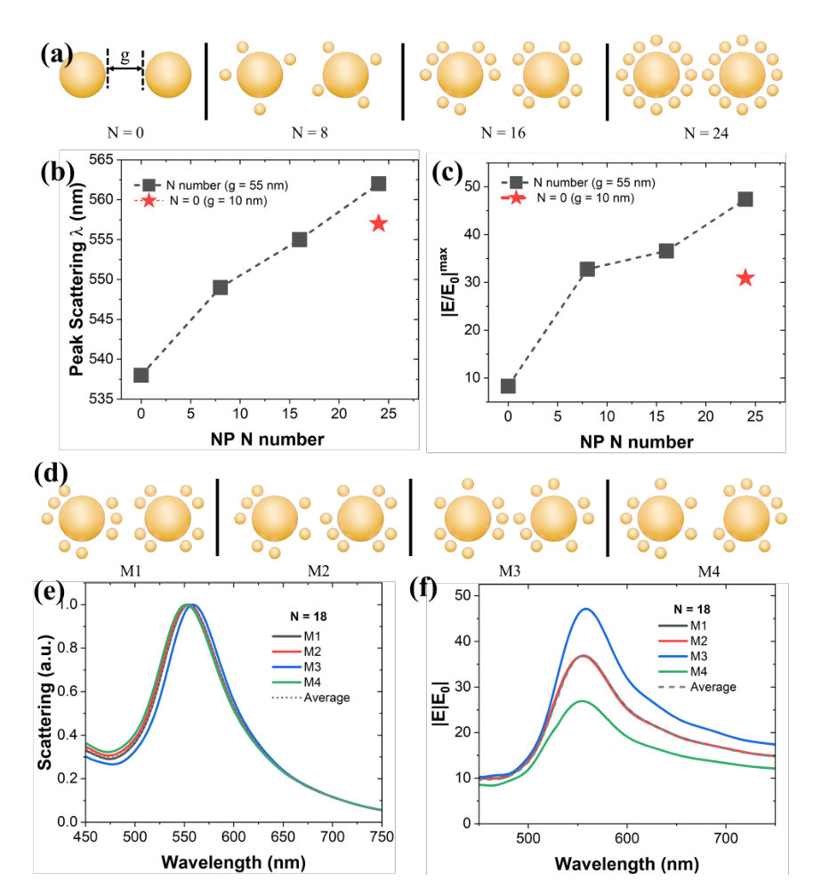
<figcaption class="paper-figure-caption"><b>Fig 1.</b> Figure 1. (a) Many-body plasmonic cluster architecture with varied N number of satellite</figcaption>
</figure>
<figure class="paper-figure-card">
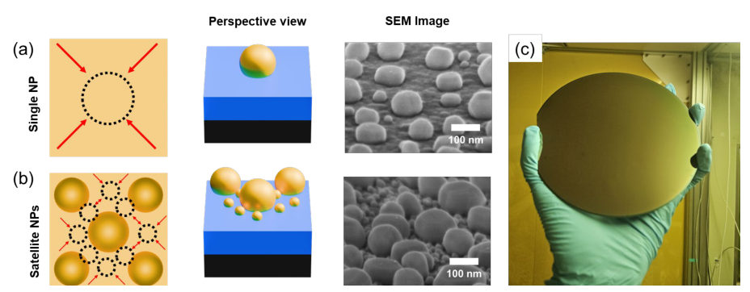
<figcaption class="paper-figure-caption"><b>Fig 2.</b> Figure 2. Schematic illustrations and corresponding scanning electron microscopy (SEM)</figcaption>
</figure>
<figure class="paper-figure-card">
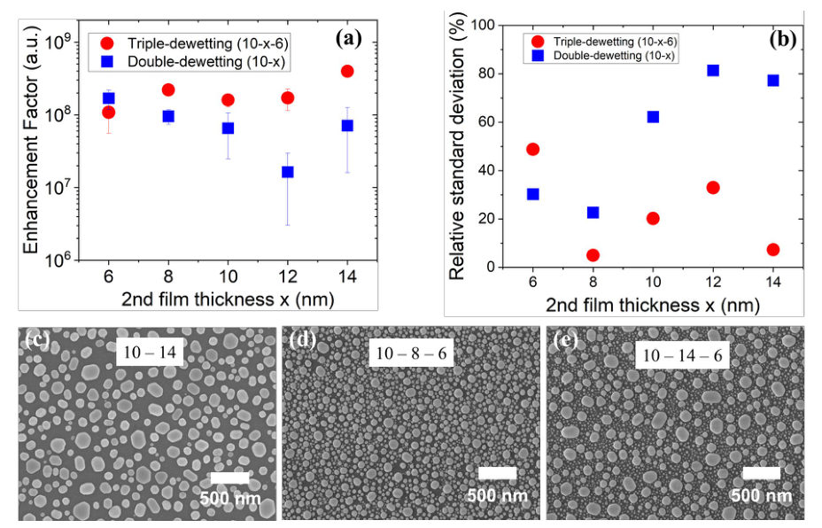
<figcaption class="paper-figure-caption"><b>Fig 3.</b> Figure 3. (a) Experimental SERS enhancement factors and (b) relative standard deviation</figcaption>
</figure>
<figure class="paper-figure-card">
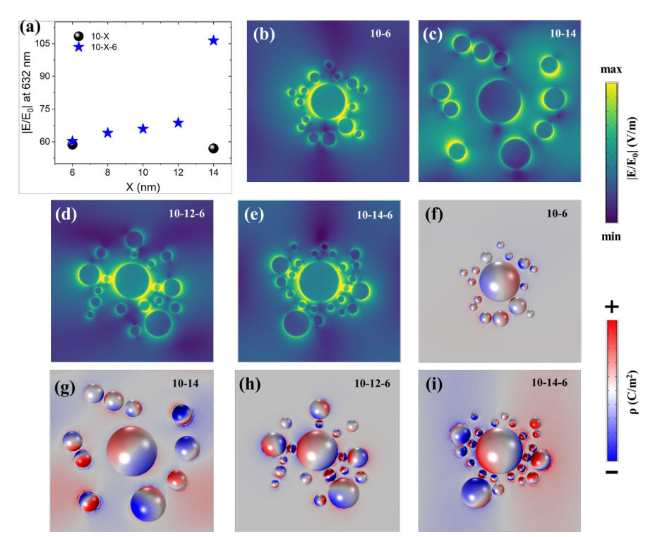
<figcaption class="paper-figure-caption"><b>Fig 4.</b> Figure 4. Simulation analysis of double and triple dewetting plasmonic nanostructure models.</figcaption>
</figure>
<figure class="paper-figure-card">
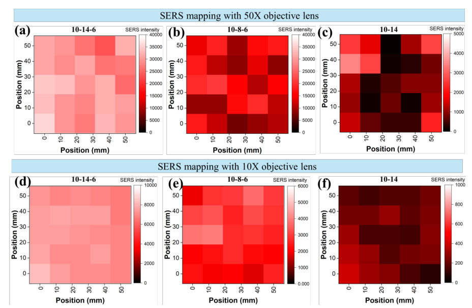
<figcaption class="paper-figure-caption"><b>Fig 5.</b> Figure 5. Mapping results of benzenethiol 1072 cm-1 of large-area samples (a) 10-14-6, (b) 10-</figcaption>
</figure>
</div>

<p><strong>Summary.</strong> The research introduces a novel, scalable method for creating high-performance plasmonic nanostructures by forming many-body clusters through controlled dewetting. By leveraging statistical averaging over particle disorder, the system achieves superior electromagnetic field enhancement and unprecedented uniformity compared to traditional few-particle designs. This establishes a practical platform for next-generation sensing and quantum technologies.</p>
<p><strong>Why it may be interesting.</strong> This work directly addresses how collective behavior in disordered media (plasmonics) can be modeled using statistical averaging principles to achieve robust performance, which has parallels in understanding complex condensed matter systems like spin glasses or amorphous materials.</p>
<details>
<summary>Detailed structure</summary>
<p><strong>Main problem.</strong> The core challenge is achieving wafer-scale, uniform, and giant electromagnetic field enhancement in plasmonic nanostructures while overcoming the inherent trade-off between high-enhancement few-body designs (sensitive to flaws) and low-enhancement scalable methods.</p>
<p><strong>Main result.</strong> By engineering a many-body plasmonic architecture using controlled dewetting, the system achieves high collective enhancement that surpasses optimized few-body systems while maintaining exceptional uniformity across large areas.</p>
<p><strong>Method.</strong> The authors combine lithography-free, multi-step dewetting fabrication with advanced electromagnetic simulations (FDTD) and characterization techniques like SERS spectroscopy to validate the statistical averaging principle.</p>
<p><strong>Model / system.</strong> The system is a plasmonic nanocluster formed by gold nanoparticles on a substrate. The model leverages statistical mechanics principles, treating the structure as approaching a continuum limit ($N \gg 1$) where local disorder averages out, enabling high performance despite geometric imperfections.</p>
<p><strong>Key observables.</strong> Near-field enhancement ($  ext{NFE} |E/E_0|$), Surface-Enhanced Raman Scattering (SERS) enhancement factor, and the Relative Standard Deviation ($ ext{RSD}$) quantifying uniformity.</p>
<p><strong>Important parameters / regimes.</strong> The number of satellite nanoparticles ($N$), gap size, and the specific dewetting sequence used to control particle density are critical parameters.</p>
<p><strong>Assumptions / limitations.</strong> The primary assumption is that optical performance can be decoupled from precise nanoscale positioning by relying instead on the statistical consistency of nanoparticle distribution across the wafer.</p>
<p><strong>Figures summary.</strong> Figures illustrate the evolution of nanocluster formation via dewetting, compare SERS enhancement factors and RSD for different cluster architectures (e.g., 10-14-6 vs 10-8-8), and show simulated near-field profiles confirming high, uniform field localization.</p>
<p><strong>Paper structure.</strong> The paper progresses from identifying the scalability/enhancement trade-off to proposing a statistical mechanics-inspired many-body solution. It details the dewetting fabrication process, presents simulation results showing enhancement scaling with particle count, and validates uniformity using SERS measurements across wafer areas.</p>
</details>
<details>
<summary>Abstract</summary>
<p>Scalable plasmonic technologies face a critical trade-off: few-body architectures offer high enhancement but are sensitive to fabrication flaws, while scalable methods like solid-state dewetting yield large, low-enhancement gaps. We introduce a paradigm shift using a many-body plasmonic architecture inspired by statistical mechanics. By moving toward the continuum limit (N&gt;&gt;1), local geometric variations are statistically averaged out, effectively decoupling optical performance from microscopic disorder. We implement this concept via a lithography- and etching-free, multi-step dewetting strategy, creating wafer-scale nanoclusters. This process strategically forms a robust many-body system by introducing numerous small satellite nanoparticles between larger particles. Crucially, this design achieves a high collective enhancement that surpasses even optimized few-body systems, despite having larger individual gaps. Under optimized conditions, these substrates exhibit a surface-enhanced Raman scattering enhancement factor approaching 4 x 108 with unprecedented reproducibility (RSD of ~10%). This scalable, low-cost concept establishes a practical route toward reproducible wafer-scale nanophotonic platforms for sensing, spectroscopy, and quantum technologies.</p>
</details>
<p><sub><a href="#top">↑ back to top</a></sub></p>

<p><a id="paper-2607.06404"></a></p>
<h3 id="bosonic-quantum-error-correcting-codes-with-finite-stellar-rank"><a href="http://arxiv.org/abs/2607.06404v1">Bosonic quantum error-correcting codes with finite stellar rank</a></h3>
<p><strong>Authors:</strong> Rui Wang, Adithi Udupa, Timo Hillmann, Ulysse Chabaud, Alessandro Ferraro, Giulia Ferrini<br>
<strong>Type:</strong> theory · <strong>Category:</strong> quantum information and computing · <strong>PDF:</strong> <a href="https://arxiv.org/pdf/2607.06404v1">https://arxiv.org/pdf/2607.06404v1</a><br>
<strong>Analysis basis:</strong> full PDF text, analyzed in chunks
<strong>Topic relevance:</strong> <code>Keldysh / 2PI / non-Gaussian methods</code> <strong>1/5</strong> · <code>correlated / nonlocal dissipation</code> <strong>1/5</strong> · <code>driven-dissipative phase transition</code> <strong>1/5</strong> · <code>entanglement &amp; information structure</code> <strong>1/5</strong> · <code>methods for driven-dissipative</code> <strong>1/5</strong></p>
<div class="figure-strip-hint">↔ Scroll figures horizontally</div>
<div class="paper-figures-scroll">
<figure class="paper-figure-card">
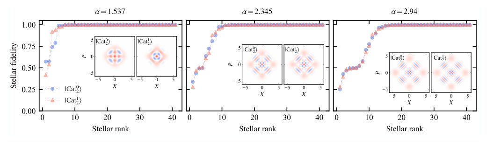
<figcaption class="paper-figure-caption"><b>Fig 1.</b> FIG. 1. Stellar fidelity as a function of stellar rank k for the logical |Cat0 2⟩(circles) and |Cat1 2⟩(triangles) states of cat codes with rotational symmetry order N = 2. Results are shown for three cat-state amplitudes at the sweet spots α = 1.537, α = 2.345, and α = 2.94. For larger α, the convergence with stellar rank becomes slower and plateau-like features appear, reflecting the increasing non-Gaussian resources required to resolve more separated coherent-state components. The insets show the Wigner functions of the target states being approximated. A detailed discussion of the plateau behavior is provided in Appendix C.</figcaption>
</figure>
<figure class="paper-figure-card">
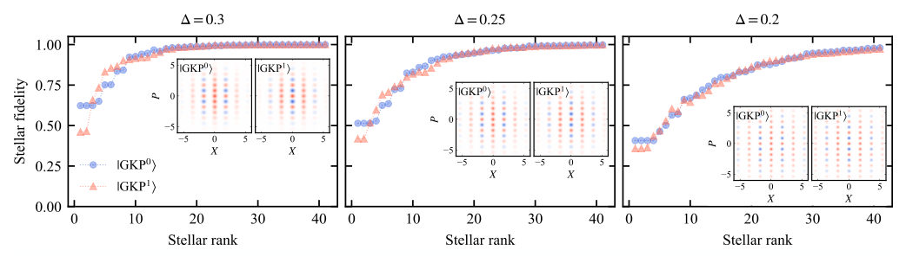
<figcaption class="paper-figure-caption"><b>Fig 2.</b> FIG. 2. Approximation of GKP codewords with finite stellar rank. The optimized stellar fidelity is plotted versus stellar rank k for the logical |GKP0⟩(circles) and |GKP1⟩(triangles) states with regularization parameters ∆= 0.3, 0.25, and 0.2. Smaller ∆produces sharper grid peaks and a more extended phase-space structure, requiring higher stellar rank to reach comparable fidelity. The insets show the Wigner functions of the target GKP states.</figcaption>
</figure>
<figure class="paper-figure-card">
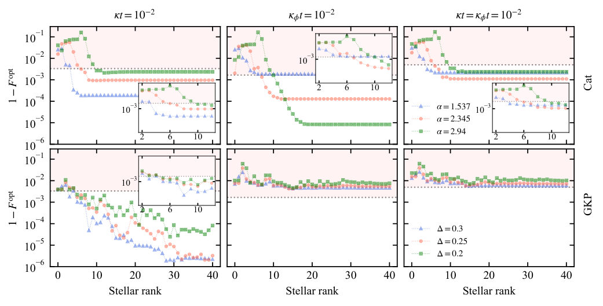
<figcaption class="paper-figure-caption"><b>Fig 3.</b> FIG. 3. Error-correcting performance of finite-stellar-rank approximations of cat and GKP codewords. The optimal channel infidelity 1−F opt</figcaption>
</figure>
<figure class="paper-figure-card">
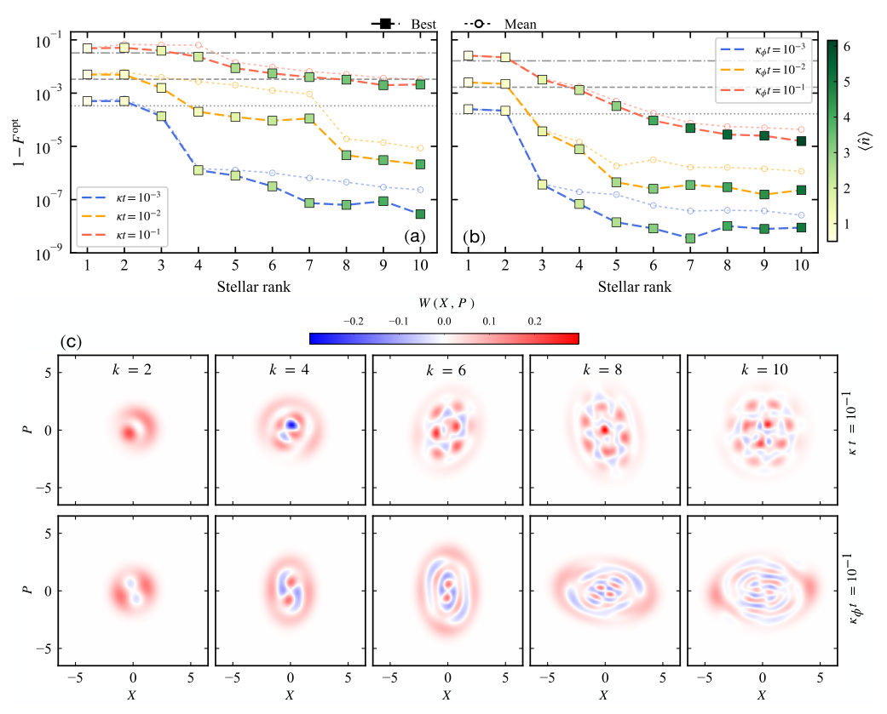
<figcaption class="paper-figure-caption"><b>Fig 4.</b> FIG. 4. Optimized error-correction performance, average photon number, and phase-space structure of finite-stellar-rank bosonic encodings under photon-loss and dephasing noise. (a) Optimal-recovery channel infidelity (1 −F opt) as a function of stellar rank k for encodings optimized under photon loss with κt ∈{10−3, 10−2, 10−1}.The Petz-recovery fidelity is used as the surrogate objective during the encoding search, while the plotted infidelities are computed using optimal recovery for the final codewords. Square markers show the best result over independent numerical runs, while open circles show the mean over runs. Marker colors indicate the mean photon number ⟨ˆn⟩of the corresponding...</figcaption>
</figure>
<figure class="paper-figure-card">
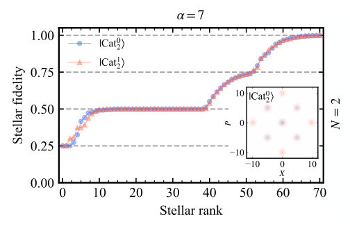
<figcaption class="paper-figure-caption"><b>Fig 5.</b> FIG. 5. Stellar fidelity as a function of stellar rank k for large- amplitude cat states with α = 7 and N = 2. The blue circles and red triangles correspond to the two logical codewords |Cat0 2⟩ and |Cat1 2⟩, respectively. In the large-amplitude regime, the coher- ent components are well separated in phase space, leading to visible plateau structures in the stellar-fidelity profile. For N = 2, the ex- pected plateau values are 1/4, 1/2, 3/4, and 1, corresponding to the effective capture of one, two, three, and four coherent components within the finite-rank approximation. The gray dotted lines indicate the plateau values. And the inset shows the phase-space locations of the coherent...</figcaption>
</figure>
</div>

<p><strong>Summary.</strong> This paper develops a resource measure called stellar rank to analyze bosonic quantum error-correcting codes under finite preparation constraints. It demonstrates that these physical limitations force a trade-off between ideal code properties and achievable performance against noise like photon loss or dephasing. The findings establish stellar rank as a crucial, operationally relevant metric for designing robust continuous-variable quantum information protocols.</p>
<p><strong>Why it may be interesting.</strong> It provides a rigorous resource theory framework (stellar rank) for analyzing bosonic QEC performance in realistic settings where perfect state preparation is impossible, bridging abstract theory with practical quantum optics limitations.</p>
<details>
<summary>Detailed structure</summary>
<p><strong>Main problem.</strong> The work addresses the practical challenge of designing bosonic quantum error-correcting (QEC) codes when limited by finite resources for preparing non-Gaussian states.</p>
<p><strong>Main result.</strong> Finite stellar rank imposes a trade-off among state approximability, energy, and logical protection; optimized encodings reveal noise-adapted structures, establishing stellar rank as an operationally meaningful resource measure.</p>
<p><strong>Method.</strong> The authors use stellar rank as a resource measure to benchmark bosonic codes (like Cat/GKP) under finite preparation constraints, optimizing directly within these constrained variational classes.</p>
<p><strong>Model / system.</strong> The system involves continuous-variable bosonic modes used for QEC. The analysis considers noise channels such as photon loss and photon-number dephasing acting on encoded states.</p>
<p><strong>Key observables.</strong> Stellar fidelity ($f^\star_k$), channel fidelity, Wigner functions of optimized codewords.</p>
<p><strong>Important parameters / regimes.</strong> Stellar Rank ($k$), Photon Loss rate ($\kappa$), Dephasing strength ($\kappa_\phi$).</p>
<p><strong>Assumptions / limitations.</strong> The primary assumption is that the optimal recovery map can be found, and the analysis relies on approximating ideal states using finite stellar rank resources.</p>
<p><strong>Figures summary.</strong> Figure 1 illustrates how stellar fidelity increases with increasing stellar rank for Cat codes. Figure 9 shows Wigner functions of optimized states revealing grid-like or rotationally symmetric structures depending on the noise type and stellar rank.</p>
<p><strong>Paper structure.</strong> The paper first establishes the problem by noting that finite resources constrain ideal QEC codewords, then develops methods using stellar fidelity to quantify approximation quality, and finally optimizes encodings directly under these constraints to reveal noise-adapted code geometries.</p>
</details>
<details>
<summary>Abstract</summary>
<p>Bosonic quantum error correction (QEC) relies on non-Gaussian bosonic encodings whose preparation cost is a central practical constraint. In this work, we use stellar rank as a resource measure to design and benchmark bosonic codes under finite non-Gaussian resources. For fixed cat and Gottesman--Kitaev--Preskill (GKP) code families, we show that finite stellar rank creates a trade-off among state approximability, energy, and logical protection under photon loss and photon-number dephasing, evaluated with optimal recovery. This trade-off implies that codewords with better ideal error-correction properties need not be optimal once finite-rank preparation constraints are imposed. Going beyond fixed-target codewords, we directly optimize bosonic encodings at fixed stellar rank, revealing noise-adapted code structures and concrete resource thresholds. Grid-like encodings emerge under photon loss, whereas approximately rotation-symmetric encodings arise under dephasing. In the optimized search, stellar rank k=2 suffices to surpass break-even for all dephasing strengths considered, while under photon loss the required rank increases with the loss rate. These results establish stellar rank as an operationally meaningful resource measure for bosonic QEC under practical state-preparation constraints.</p>
</details>
<p><sub><a href="#top">↑ back to top</a></sub></p>

<p><a id="paper-2607.06040"></a></p>
<h3 id="hybrid-quantum-floating-point-method-for-sharp-arithmetic"><a href="http://arxiv.org/abs/2607.06040v1">Hybrid quantum floating-point method for sharp arithmetic</a></h3>
<p><strong>Authors:</strong> Gabriele Agliardi, Enrico Prati<br>
<strong>Type:</strong> theory · <strong>Category:</strong> quantum information and computing · <strong>PDF:</strong> <a href="https://arxiv.org/pdf/2607.06040v1">https://arxiv.org/pdf/2607.06040v1</a><br>
<strong>Analysis basis:</strong> full PDF text, analyzed in chunks
<strong>Topic relevance:</strong> <code>analog quantum simulation</code> <strong>1/5</strong> · <code>entanglement &amp; information structure</code> <strong>1/5</strong> · <code>methods for driven-dissipative</code> <strong>1/5</strong> · <code>non-equilibrium dynamics</code> <strong>1/5</strong></p>
<div class="figure-strip-hint">↔ Scroll figures horizontally</div>
<div class="paper-figures-scroll">
<figure class="paper-figure-card">
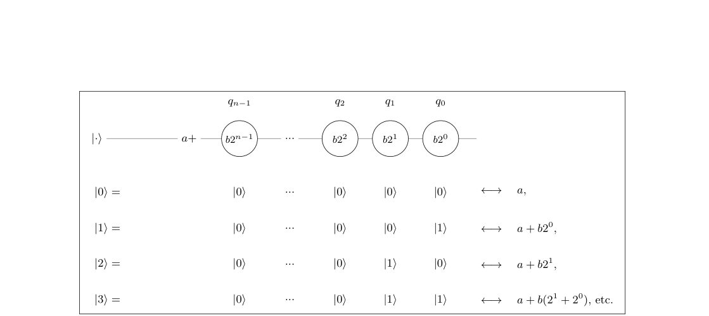
<figcaption class="paper-figure-caption"><b>Fig 1.</b> Figure 1: The top row contains a visual representation of a CEFV. In the rows below, some examples of the floating-point number represented by the CEFV, when the quantum state belongs to the computa- tional basis. States in the computational basis follow the usual bit string decomposition, thus providing a representation of any x ∈Dfp a,b.</figcaption>
</figure>
<figure class="paper-figure-card">
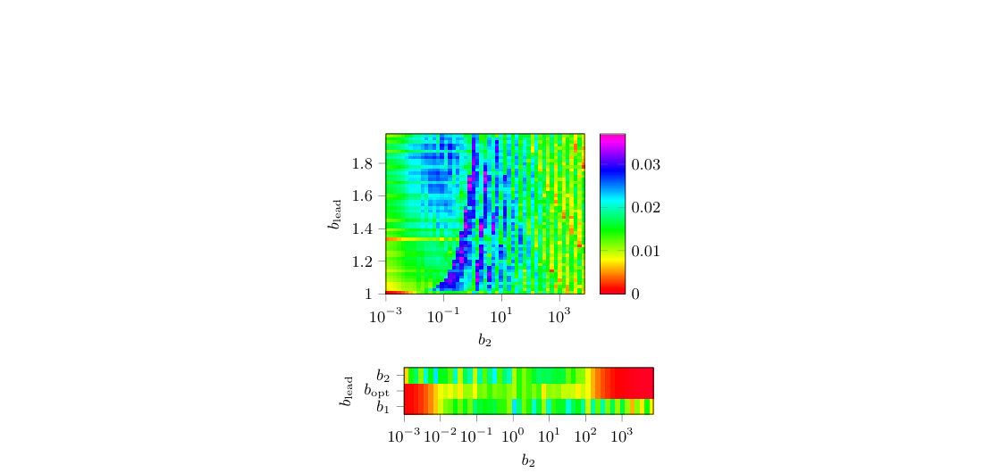
<figcaption class="paper-figure-caption"><b>Fig 2.</b> Figure 2: Effect of the choice of blead on errors, for the sum of two CEFVs of size n, in an output register of same size n = 8. In the top plot, b1 is kept equal to 1, b2 varies from 10−3 to 104, and blead in [1, 2]. The color intensity represents the relative error, namely ϵ++ϵ− b12n+b22n . In the bottom plot, a focus on three specific choices of blead, namely b1 (i.e., 1), b2, and the optimal bopt.</figcaption>
</figure>
<figure class="paper-figure-card">
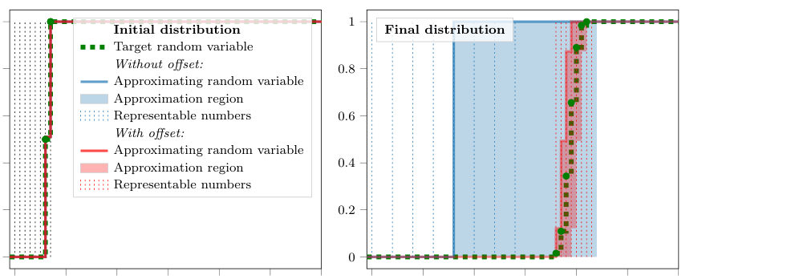
<figcaption class="paper-figure-caption"><b>Fig 3.</b> Figure 3: Cumulative distribution function for repeated applications of the sum. Left plot: the initial random variable (providing 6 or 7, both with 50% probability), which can be encoded exactly in 3 qubits both with or without offset. Right plot: after 6 applications of the sum of the initial random variable with itself, the target random variable (in dashed green) compared to the approximating random variable (namely the one encoded in the quantum states), as well as the approximation region (defined as the approximating random variable +/- tolerances). Vertical grids show the values which can be perfectly represented by the quantum variables. The advantage of offsets is clearly visible,...</figcaption>
</figure>
<figure class="paper-figure-card">

<figcaption class="paper-figure-caption"><b>Fig 4.</b> Figure 3 contains a visualization of the repeated application of the sum of a random variable with itself,</figcaption>
</figure>
</div>

<p><strong>Summary.</strong> This paper proposes a novel hybrid quantum-classical method, the CEFV, to represent floating-point numbers in quantum states while preserving high arithmetic precision. By classically tracking global information like range and tolerance, it significantly reduces error accumulation during repeated operations compared to purely quantum approaches. This advancement is crucial for implementing complex numerical algorithms on near-term quantum hardware.</p>
<p><strong>Why it may be interesting.</strong> While focused on arithmetic circuits, the rigorous management of state representation fidelity and resource optimization (depth vs. accuracy) is highly relevant to designing complex quantum simulations for condensed matter systems.</p>
<details>
<summary>Detailed structure</summary>
<p><strong>Main problem.</strong> The primary challenge is mitigating precision degradation when performing repeated arithmetic operations on quantum floating-point variables while maintaining low circuit depth.</p>
<p><strong>Main result.</strong> A hybrid quantum-classical representation, the Classically-Enriched Floating Point Variable (CEFV), was introduced, which significantly reduces approximation error compared to previous methods.</p>
<p><strong>Method.</strong> The method combines a quantum register for values with a classical register storing global parameters like range and tolerance, allowing arithmetic operations (sum/product) to be defined while managing overflow and tracking precision loss.</p>
<p><strong>Model / system.</strong> The model uses quantum registers to encode random variables, extending the concept of basis encoding to handle fractional numbers via the CEFV structure. It explicitly accounts for compatibility with potentially continuous random variables using tolerance parameters ($\epsilon_\pm$).</p>
<p><strong>Key observables.</strong> Approximation error ($\epsilon_{	ext{approx}}^\pm$), circuit depth (measured in $[	ext{u}3, 	ext{cx}]$ basis), and the required number of output qubits.</p>
<p><strong>Important parameters / regimes.</strong> The scaling factor ($b$) and offset are critical parameters that determine the achievable precision and the complexity of the arithmetic circuits.</p>
<p><strong>Assumptions / limitations.</strong> The method assumes that global properties (like range or exponent) can be efficiently stored classically to guide quantum operations, and it relies on defining compatible error bounds ($\epsilon_\pm$).</p>
<p><strong>Figures summary.</strong> Figures illustrate the CEFV structure mapping basis states to values; heat maps compare relative errors for addition based on scaling factor choices; CDFs show the benefit of using offsets during repeated summation; and other figures compare circuit depth and error reduction across different algorithmic implementations.</p>
<p><strong>Paper structure.</strong> The paper develops the theoretical framework by first introducing the hybrid CEFV representation, defining compatible sum/product operations that manage overflow and tolerance propagation. It then rigorously analyzes the impact of scaling factors ($  ext{blead}$) and offsets on error accumulation, concluding with comparisons of circuit depth improvements from algorithmic refinements.</p>
</details>
<details>
<summary>Abstract</summary>
<p>There are several possible ways to encode random variables in a quantum state. The basis encoding of bit strings has paramount importance because it allows to load the values of a random variable through the superposition of corresponding basis states, and to then exploit quantum parallelism in processing algorithms. The basis encoding offers a natural way to represent an unsigned integer random variable, and extends to signed integers, as well as to fixed-point and floating-point variables. Each quantum representation of fractional numbers, however, involves a trade-off between accuracy and depth of manipulation circuits. Here, an efficient hybrid quantum-classical representation of quantum floating points is introduced. It combines a quantum register containing the values, with a classical register storing global information about the variable, namely the range and approximation tolerances. The sum and product operations are defined, in such a way as to ensure they are performed without overflow. By taking advantage of the stored classical information, the precision degradation that occurs due to rounding after repeated data manipulations, can be significantly reduced compared to known strategies. Ad hoc examples show up to around $90\%$ reduction in approximation, compared to previous techniques, after repeated additions. The method finds application in many algorithms of practical relevance and constitutes a significant advance in the design of arithmetic circuits with low depth and high accuracy.</p>
</details>
<p><sub><a href="#top">↑ back to top</a></sub></p>

<p><a id="paper-2607.06462"></a></p>
<h3 id="charge-transfer-gap-size-and-oxygen-hole-content-as-two-mechanisms-controlling-math799math-in-the-emery-model"><a href="http://arxiv.org/abs/2607.06462v1">Charge-transfer gap size and oxygen hole content as two mechanisms controlling $T_c$ in the Emery model</a></h3>
<p><strong>Authors:</strong> Eleanor M. O'Callaghan, Nicolas Kowalski, A. -M. S. Tremblay, Giovanni Sordi<br>
<strong>Type:</strong> theory · <strong>Category:</strong> strongly correlated electrons · <strong>PDF:</strong> <a href="https://arxiv.org/pdf/2607.06462v1">https://arxiv.org/pdf/2607.06462v1</a><br>
<strong>Analysis basis:</strong> full PDF text, analyzed in chunks
<strong>Topic relevance:</strong> <code>Keldysh / 2PI / non-Gaussian methods</code> <strong>1/5</strong> · <code>analog quantum simulation</code> <strong>1/5</strong> · <code>driven-dissipative phase transition</code> <strong>1/5</strong></p>
<div class="figure-strip-hint">↔ Scroll figures horizontally</div>
<div class="paper-figures-scroll">
<figure class="paper-figure-card">
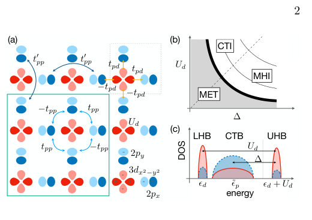
<figcaption class="paper-figure-caption"><b>Fig 1.</b> FIG. 1. (a) Sketch of the Emery model. The dotted gray square indicates the lattice unit cell, which consists of a Cu 3dx2−y2 orbital (red) of onsite energy ϵd and the O 2px, 2py or- bitals (blue) of onsite energy ϵp. We use bright and pale colors to denote the positive and negative signs of the orbital lobes. We use the convention that the overlap between orbital lobes of opposite (equal) sign yields to a positive (negative) hopping amplitude. There are three hopping amplitudes: tpd (between the nearest-neighbor Cu-O orbitals) [orange arrows], tpp and t′ pp (between nearest-neighbor and next-nearest-neighbor O 2px and 2py orbitals, respectively) [light blue and dark blue arrows,...</figcaption>
</figure>
<figure class="paper-figure-card">
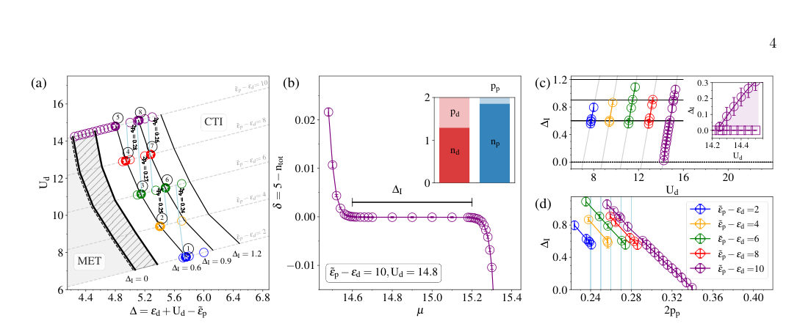
<figcaption class="paper-figure-caption"><b>Fig 2.</b> FIG. 2. (a) Zaanen-Sawatzky-Allen diagram Ud vs ∆= ϵd + Ud −˜ϵp of the Emery model, computed with CDMFT. Open circles indicate the parameters (∆, Ud) investigated in our work. All data are at ntot = 5, i.e. zero doping, and T = 1/50. Gray dashed lines denote constant values of the bare Cu-O energy distance ˜ϵp −ϵd. The data along each of these lines are assigned a different color. The hatched region bounded by thick black lines denotes the coexistence associated with the first-order metal-insulator transition. Thin black lines are lines of constant charge gap size ∆I. The data that is closest to the lines of constant ∆I are marked by circles with a star, and labeled 1 to 8. The dashed black...</figcaption>
</figure>
<figure class="paper-figure-card">
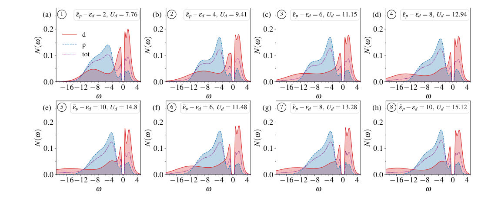
<figcaption class="paper-figure-caption"><b>Fig 3.</b> FIG. 3. (a)-(h) Partial density of states N(ω) of the Cu 3dx2−y2 orbital (red solid line) and of the degenerate O 2px, 2py orbitals (blue dashed line), along with the total density of states Ntot = [Nd(ω) + 2Np(ω)]/3 (purple dotted line). Each density of states is normalised to unity. The Fermi level is at ω = 0. Each panel corresponds to the parameters (˜ϵp −ϵd, Ud). These parameters are labeled by circled numbers, which are also indicated in the Ud −∆diagram of Fig. 2(a). Data are for T = 1/50. We perform the analytical continuation from imaginary to real frequencies with the software of Ref. [51].</figcaption>
</figure>
<figure class="paper-figure-card">
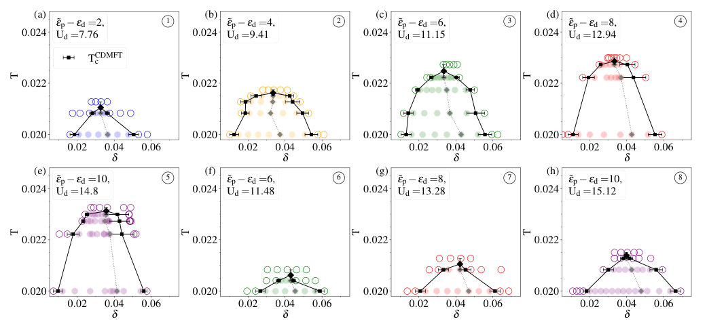
<figcaption class="paper-figure-caption"><b>Fig 4.</b> FIG. 4. (a)-(h) Superconducting critical temperature T CDMFT c (black line with filled squares) vs hole doping δ = 5 −ntot. T CDMFT c (δ) is the line where the superconducting order parameter Φ changes from zero (open circles) to nonzero (shaded circles) [as determined in Fig. 5]. The dotted gray line with diamonds connects the values of doping that maximize Φ at each temperature. A black diamond marks the maximum superconducting critical temperature T max c . Each panel corresponds to the parameters (˜ϵp −ϵd, Ud). These parameters are labeled by circled numbers. The parent (δ = 0) insulating state from which the superconducting state emerges is indicated in the Zaanen-Sawatzky-Allen...</figcaption>
</figure>
<figure class="paper-figure-card">
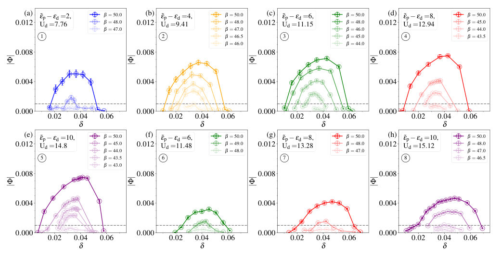
<figcaption class="paper-figure-caption"><b>Fig 5.</b> FIG. 5. (a)-(h) Superconducting order parameter Φ vs doping δ for different values of the inverse temperature β = 1/T. Each panel corresponds to coordinates (˜ϵp −ϵd, Ud). The horizontal dashed line at Φ = 0.001 marks the threshold above which we consider the system to be superconducting.</figcaption>
</figure>
</div>

<p><strong>Summary.</strong> This work analyzes the Emery model for cuprates to understand what drives high-temperature superconductivity. Using advanced quantum many-body theory (CDMFT), the authors find that $T_c$ is primarily controlled by how much charge resides on the oxygen sites (oxygen hole content) and the size of the charge-transfer gap. This provides a crucial theoretical map for understanding cuprate physics.</p>
<p><strong>Why it may be interesting.</strong> The explicit connection drawn between model parameters (like charge gap) and macroscopic properties ($T_c$) provides a concrete theoretical framework that can be tested against experimental measurements, including those from ultracold atoms simulations.</p>
<details>
<summary>Detailed structure</summary>
<p><strong>Main problem.</strong> The study investigates the fundamental mechanisms controlling the superconducting critical temperature ($T_c$) trends observed in high-temperature cuprate superconductors.</p>
<p><strong>Main result.</strong> The maximum $T_c$ is controlled by two key electronic structure parameters: the charge-transfer gap size ($\Delta_I$) and the oxygen hole content, with the latter being identified as the dominant variable.</p>
<p><strong>Method.</strong> The research employs cellular dynamical mean-field theory (CDMFT) to solve the model Hamiltonian at finite temperature, guided by the Zaanen-Sawatzky-Allen diagram.</p>
<p><strong>Model / system.</strong> The system is modeled using the Emery model, which describes the copper-oxygen plane in cuprates. This model incorporates onsite repulsion ($U_d$) on Cu and hopping terms between Cu and O orbitals.</p>
<p><strong>Key observables.</strong> Superconducting critical temperature ($T_{max}^c$), charge-transfer gap size ($\Delta_I$), and oxygen hole content.</p>
<p><strong>Important parameters / regimes.</strong> Copper-oxygen energy distance ($\Delta$), onsite repulsion on Cu orbital ($U_d$), and the doping level (related to hole content).</p>
<p><strong>Assumptions / limitations.</strong> The analysis focuses on the charge-transfer insulating regime ($U_d > \Delta$) and utilizes CDMFT approximations.</p>
<p><strong>Figures summary.</strong> Figures illustrate the Zaanen-Sawatzky-Allen diagram mapping out constant lines for $\Delta_I$ and oxygen hole content, alongside isotherms used to determine the gap size.</p>
<p><strong>Paper structure.</strong> The paper first establishes the theoretical framework using the Emery model and CDMFT. It then systematically maps the parameter space using the Zaanen-Sawatzky-Allen diagram to quantify how $T_c^{
m max}$ depends on $\Delta$ and $U_d$, culminating in identifying the roles of gap size and hole content.</p>
</details>
<details>
<summary>Abstract</summary>
<p>Investigating the drivers of superconducting critical temperature trends in cuprates is crucial for uncovering the mechanism of high-temperature superconductivity. Here we study this problem in the canonical model of the copper-oxygen plane, the Emery model, with cellular dynamical mean-field theory. Using the Zaanen-Sawatzky-Allen diagram as a guiding framework, we systematically quantify how the maximum superconducting critical temperature $T_c^{\rm max}$ depends on the copper-oxygen energy distance and on the local repulsion on the copper orbital. Unexpectedly, $T_c^{\rm max}$ is optimized not only near the charge-transfer insulator to metal boundary, consistent with previous findings, but also deep in the charge-transfer regime, revealing an unexplored mechanism. Then we link model parameters to physical observables, identifying the charge-transfer gap size and the oxygen hole content as two mechanisms controlling $T_c^{\rm max}$. $T_c^{\rm max}$ increases monotonically as the oxygen hole content increases and the charge gap size decreases. The oxygen hole content is the dominant variable in varying $T_c^{\rm max}$. Our work provides predictions for proposed realizations of the Emery model with ultracold atoms and a theoretical framework for understanding key experimental trends in hole-doped cuprates.</p>
</details>
<p><sub><a href="#top">↑ back to top</a></sub></p>

<p><a id="paper-2607.05814"></a></p>
<h3 id="latency-constrained-hardware-aware-quantum-error-correction-co-design-with-adaptive-confidence-gated-neural-decoding-for-the-rotated-surface-code"><a href="http://arxiv.org/abs/2607.05814v1">Latency-Constrained Hardware-Aware Quantum Error Correction Co-Design with Adaptive Confidence-Gated Neural Decoding for the Rotated Surface Code</a></h3>
<p><strong>Authors:</strong> Sumit Chongder<br>
<strong>Type:</strong> both · <strong>Category:</strong> quantum information and computing · <strong>PDF:</strong> <a href="https://arxiv.org/pdf/2607.05814v1">https://arxiv.org/pdf/2607.05814v1</a><br>
<strong>Analysis basis:</strong> full PDF text, analyzed in chunks
<strong>Topic relevance:</strong> <code>QC/QI experiment</code> <strong>1/5</strong> · <code>methods for driven-dissipative</code> <strong>1/5</strong></p>
<div class="figure-strip-hint">↔ Scroll figures horizontally</div>
<div class="paper-figures-scroll">
<figure class="paper-figure-card">
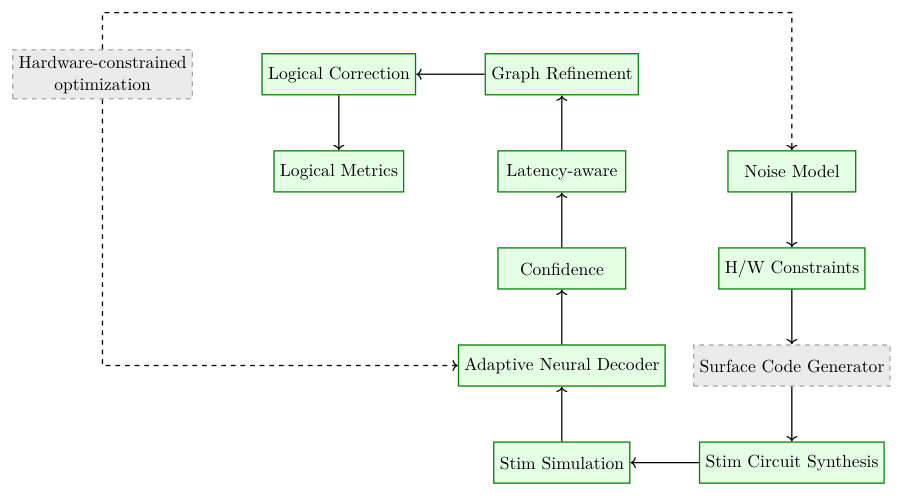
<figcaption class="paper-figure-caption"><b>Fig 1.</b> Figure 1: Hardware-aware quantum error correction co-design framework. Green solid boxes denote components implemented and empirically evaluated in this paper (noise model, circuit synthesis via Stim, adaptive confidence-gated decoder, and logical-metric evaluation). Grey dashed boxes denote the hardware-constrained code-generation and closed-loop latency-constrained optimisation components that are specified architecturally as the target of ongoing and future work (Section 7) and are not evaluated empirically here.</figcaption>
</figure>
<figure class="paper-figure-card">
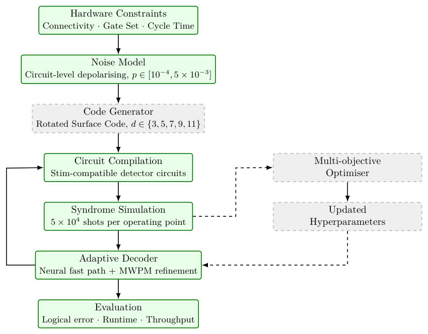
<figcaption class="paper-figure-caption"><b>Fig 2.</b> Figure 2: Hardware-aware co-design optimisation pipeline. The vertical chain (noise model, circuit compilation, syndrome simulation, adaptive decoding, evaluation) is the pipeline implemented and benchmarked in this paper. The hardware-constrained code generator and the multi-objective optimisation loop that would close the search over code candidates (right, dashed) are specified as the target architecture for the next phase of this research programme and are not exercised in the current experiments.</figcaption>
</figure>
<figure class="paper-figure-card">
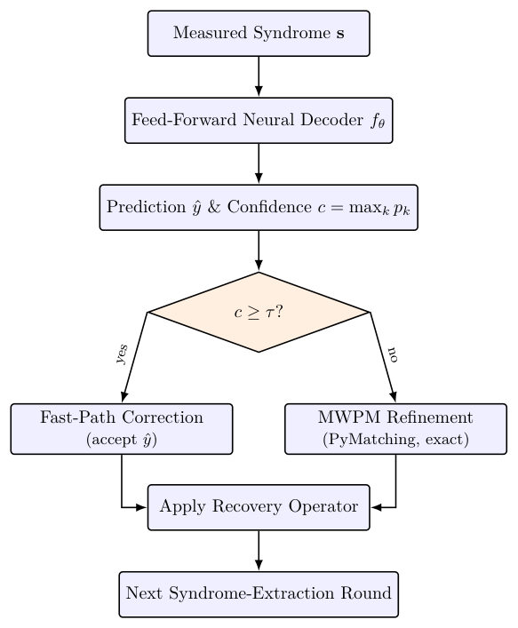
<figcaption class="paper-figure-caption"><b>Fig 3.</b> Figure 3: Decision flow of the adaptive, confidence-gated decoder. Every measured syndrome is first passed through the fast feed-forward decoder; syndromes with confidence at or above the operating threshold τ are corrected on the fast path, while low-confidence syndromes are escalated to exact minimum- weight perfect matching refinement before recovery is applied.</figcaption>
</figure>
<figure class="paper-figure-card">
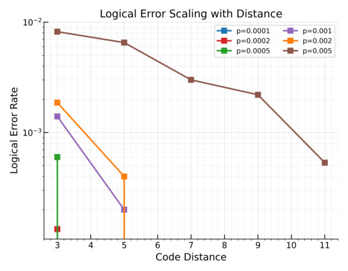
<figcaption class="paper-figure-caption"><b>Fig 4.</b> Figure 4: Fast-path logical accuracy versus code distance at fixed physical error rate p = 10−3 (data as in Table 1). Accuracy degrades as decoding-graph complexity grows with d at fixed noise strength, motivating the confidence-gated escalation mechanism evaluated in Section 5.3.</figcaption>
</figure>
<figure class="paper-figure-card">
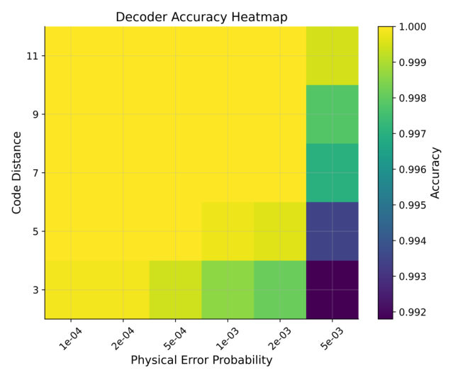
<figcaption class="paper-figure-caption"><b>Fig 5.</b> Figure 5: Decoder accuracy as a joint function of code distance and physical error probability. Full numerical values are given in Table 6.</figcaption>
</figure>
</div>

<p><strong>Summary.</strong> The paper introduces an adaptive, hardware-aware decoding framework for the Rotated Surface Code designed to overcome the bottleneck of real-time QEC. It uses a fast neural network path supplemented by a computationally intensive MWPM refinement stage only when necessary. This approach significantly boosts logical accuracy while maintaining high throughput suitable for scaling quantum processors.</p>
<p><strong>Why it may be interesting.</strong> This work directly addresses the operational feasibility of fault-tolerant quantum computing by optimizing the classical post-processing step (decoding) to meet stringent real-time latency requirements.</p>
<details>
<summary>Detailed structure</summary>
<p><strong>Main problem.</strong> Real-time decoding is a major bottleneck preventing the scaling of Quantum Error Correction (QEC) from NISQ devices to fault-tolerant quantum computation.</p>
<p><strong>Main result.</strong> The adaptive framework significantly improves logical accuracy (e.g., 99.21% to 99.81%) by selectively routing only low-confidence syndromes to a computationally expensive refinement stage, with minimal overhead.</p>
<p><strong>Method.</strong> It proposes an adaptive, two-stage decoding inference: a fast path using a lightweight neural network for most measurements, and a refinement stage using Minimum-Weight Perfect Matching (MWPM) for uncertain cases.</p>
<p><strong>Model / system.</strong> The work is implemented on the Rotated Surface Code, simulating performance under circuit-level depolarizing noise across various code distances ($d=3$ to $11$).</p>
<p><strong>Key observables.</strong> Logical accuracy, confidence-controlled accuracy–latency trade-offs, decoding throughput (up to $4.6 	imes 10^5$ samples s$^{-1}$), and per-shot latency.</p>
<p><strong>Important parameters / regimes.</strong> Code distances ($d$), physical error rates ($p$), and the adaptive confidence threshold ($  au$).</p>
<p><strong>Assumptions / limitations.</strong> The quantitative results are limited to the rotated surface code family and independent circuit-level depolarizing noise, with no generalization claimed for correlated or coherent noise.</p>
<p><strong>Figures summary.</strong> Tables summarize joint performance metrics (accuracy, error rate, runtime, throughput) across a grid of code distances and noise probabilities; Figure 1 outlines the overall hardware-aware co-design framework.</p>
<p><strong>Paper structure.</strong> The paper introduces the bottleneck problem, details the adaptive neural/MWPM decoding methodology, presents comprehensive benchmarking results across multiple parameters (Table 10), and concludes by outlining future architectural directions beyond the current scope.</p>
</details>
<details>
<summary>Abstract</summary>
<p>Real-time decoding is a major bottleneck in scaling quantum error correction (QEC) from noisy intermediate-scale quantum (NISQ) devices to fault-tolerant quantum computing. We present an adaptive confidence-gated decoding framework for the rotated surface code that treats decoding as a two-stage inference problem. A lightweight feed-forward neural network performs fast-path decoding for the majority of syndrome measurements, while only low-confidence predictions are escalated to a minimum-weight perfect matching (MWPM) refinement stage. We benchmark the framework on rotated surface codes with distances $d \in \{3,5,7,9,11\}$ under circuit-level depolarising noise using the Stim stabiliser simulator. The evaluation characterises logical accuracy, confidence-controlled accuracy-latency trade-offs, decoding throughput, per-shot latency, and decoding-graph resource scaling. Routing only 3.3%-6.2% of syndromes to the refinement stage improves logical accuracy from 99.21% for the neural-only baseline to 99.81% at a confidence threshold of 0.95 while incurring only a bounded increase in average decoding cost. Neural-decoder throughput saturates near $4.6 \times 10^{5}$ samples s$^{-1}$ at batch size 512 on commodity CPU hardware, indicating that the neural fast path is not the dominant throughput bottleneck beyond code distance $d=7$. We release the complete benchmarking pipeline, trained models, raw benchmark data, and source code, and explicitly distinguish the experimentally validated contributions from the broader hardware-aware QEC co-design roadmap, including hardware-constrained code discovery, GPU-accelerated inference, and multi-noise optimisation, which remain directions for future work.</p>
</details>
<p><sub><a href="#top">↑ back to top</a></sub></p>

<p><a id="paper-2607.06033"></a></p>
<h3 id="quantum-resources-and-performance-in-the-initialization-free-bernstein-vazirani-algorithm"><a href="http://arxiv.org/abs/2607.06033v1">Quantum Resources and Performance in the Initialization-Free Bernstein-Vazirani Algorithm</a></h3>
<p><strong>Authors:</strong> Haesol Han, Alexander Streltsov, Soojoon Lee<br>
<strong>Type:</strong> theory · <strong>Category:</strong> quantum information and computing · <strong>PDF:</strong> <a href="https://arxiv.org/pdf/2607.06033v1">https://arxiv.org/pdf/2607.06033v1</a><br>
<strong>Analysis basis:</strong> full PDF text, analyzed in chunks
<strong>Topic relevance:</strong> <code>entanglement &amp; information structure</code> <strong>1/5</strong> · <code>quantum measurements</code> <strong>1/5</strong></p>
<div class="figure-strip-hint">↔ Scroll figures horizontally</div>
<div class="paper-figures-scroll">
<figure class="paper-figure-card">
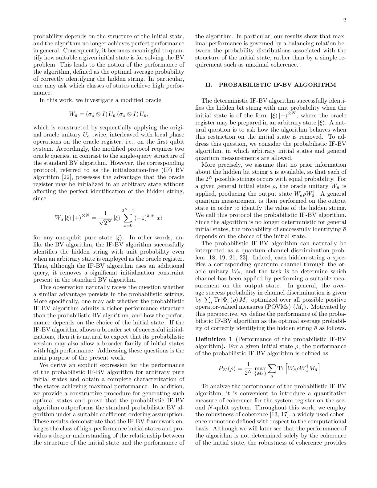
<figcaption class="paper-figure-caption"><b>Fig 1.</b> Low-resolution page preview, page 2</figcaption>
</figure>
<figure class="paper-figure-card">
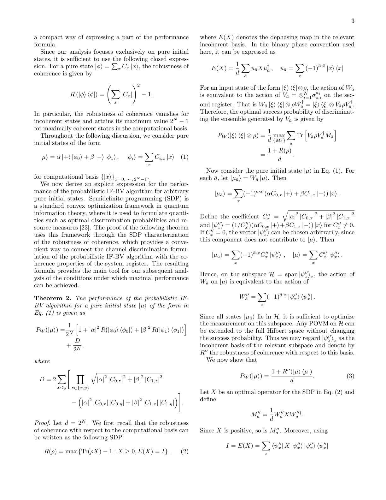
<figcaption class="paper-figure-caption"><b>Fig 2.</b> Low-resolution page preview, page 3</figcaption>
</figure>
<figure class="paper-figure-card">
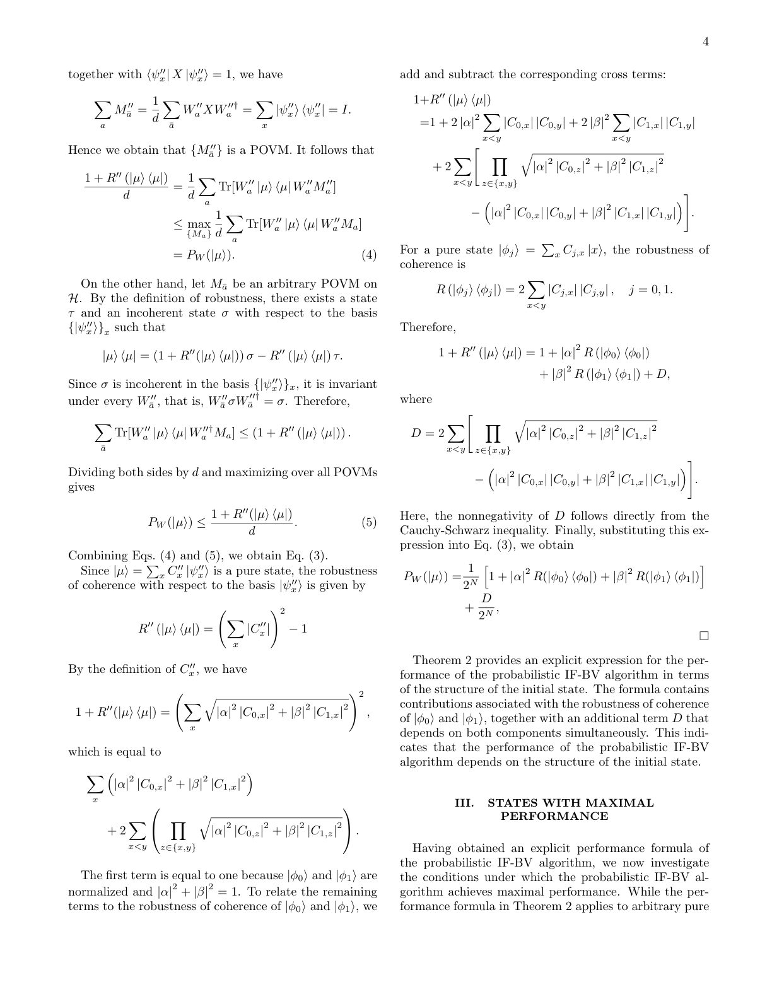
<figcaption class="paper-figure-caption"><b>Fig 3.</b> Low-resolution page preview, page 4</figcaption>
</figure>
<figure class="paper-figure-card">
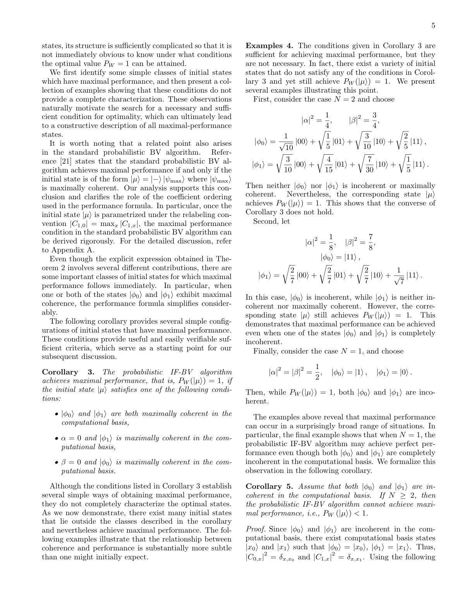
<figcaption class="paper-figure-caption"><b>Fig 4.</b> Low-resolution page preview, page 5</figcaption>
</figure>
<figure class="paper-figure-card">
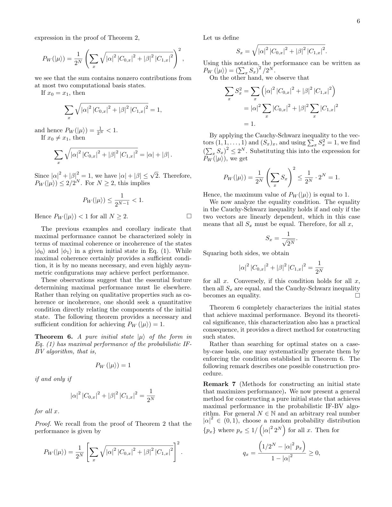
<figcaption class="paper-figure-caption"><b>Fig 5.</b> Low-resolution page preview, page 6</figcaption>
</figure>
</div>

<p><strong>Summary.</strong> This work rigorously analyzes the performance limits of an initialization-free variant of the Bernstein-Vazirani algorithm. By deriving explicit formulas based on initial state coherence, the authors prove that this IF-BV method generally surpasses the standard BV algorithm. The findings provide deep insights into which quantum resources are essential for achieving optimal computational success probabilities.</p>
<p><strong>Why it may be interesting.</strong> The rigorous mathematical characterization of quantum advantage in specific quantum algorithms, particularly how modifying initial state preparation can boost computational power, is highly relevant to understanding resource theories in quantum computation.</p>
<details>
<summary>Detailed structure</summary>
<p><strong>Main problem.</strong> The paper analyzes the performance of an initialization-free variant of the Bernstein-Vazirani (BV) quantum algorithm compared to its standard probabilistic counterpart.</p>
<p><strong>Main result.</strong> It derives explicit formulas showing that the IF-BV algorithm generally outperforms the standard BV algorithm, and it establishes necessary and sufficient conditions for achieving maximal success probability.</p>
<p><strong>Method.</strong> The analysis employs techniques from quantum channel discrimination theory, utilizing Semidefinite Programming (SDP) characterization to derive performance bounds based on initial state coherence properties.</p>
<p><strong>Model / system.</strong> The model is the probabilistic IF-BV algorithm applied to an oracle problem, considering pure initial states $|\mu
angle = \alpha |+
angle|\phi_0
angle + eta |-
angle|\phi_1
angle$ for the ancilla register.</p>
<p><strong>Key observables.</strong> Performance ($P_W$) of the IF-BV algorithm and its comparison to the standard BV performance ($P$).</p>
<p><strong>Important parameters / regimes.</strong> The coefficients $\alpha, eta$, and the coherence properties (Robustness of Coherence $R$) of the initial states $|\phi_0
angle$ and $|\phi_1
angle$.</p>
<p><strong>Assumptions / limitations.</strong> The analysis focuses on pure initial states for deriving closed-form expressions; comparisons often rely on a specific relabeling convention for the standard BV algorithm characterization.</p>
<p><strong>Paper structure.</strong> The paper progresses by first defining the IF-BV performance, deriving explicit formulas relating it to coherence (Chunk 2), then establishing necessary and sufficient conditions for maximal performance (Theorem 6), and finally proving that IF-BV generally outperforms standard BV under certain assumptions (Theorem 8).</p>
</details>
<details>
<summary>Abstract</summary>
<p>Naseri et al. [Phys. Rev. A 106, 062429 (2022); arXiv:2205.13610] studied which quantum resources in initial states are essential for the probabilistic Bernstein-Vazirani (BV) algorithm, defining its performance as the optimal average success probability over all measurements. In this work, we consider a variant of BV algorithm, which is called the initialization-free (IF) BV algorithm, in which an arbitrary ancilla state as the oracle register is allowed, to improve the performance. We derive an explicit formula for the performance of the probabilistic IF-BV algorithm and obtain a necessary and sufficient condition for an initial state to achieve maximal performance. We further prove that, under a suitable ordering assumption on the coefficients of the initial state, the probabilistic IF-BV algorithm outperforms the standard probabilistic BV algorithm.</p>
</details>
<p><sub><a href="#top">↑ back to top</a></sub></p>

<p><a id="paper-2607.06058"></a></p>
<h3 id="sqgen-structured-quantum-image-generation-with-latent-modulated-quantized-tensor-trains"><a href="http://arxiv.org/abs/2607.06058v1">SQGen: Structured Quantum Image Generation with Latent-Modulated Quantized Tensor Trains</a></h3>
<p><strong>Authors:</strong> Guang Lin, Qibin Zhao<br>
<strong>Type:</strong> both · <strong>Category:</strong> numerical methods · <strong>PDF:</strong> <a href="https://arxiv.org/pdf/2607.06058v1">https://arxiv.org/pdf/2607.06058v1</a><br>
<strong>Analysis basis:</strong> full PDF text, analyzed in chunks
<strong>Topic relevance:</strong> <code>entanglement &amp; information structure</code> <strong>1/5</strong> · <code>methods for driven-dissipative</code> <strong>1/5</strong></p>
<div class="figure-strip-hint">↔ Scroll figures horizontally</div>
<div class="paper-figures-scroll">
<figure class="paper-figure-card">
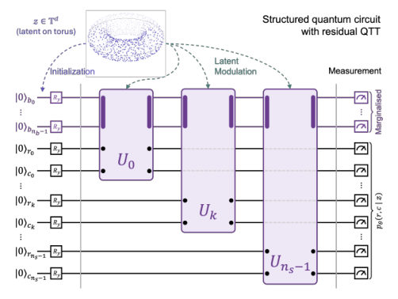
<figcaption class="paper-figure-caption"><b>Fig 1.</b> Figure 1: The illustration of the SQGen with latent- modulated quantized tensor train skeleton.</figcaption>
</figure>
<figure class="paper-figure-card">
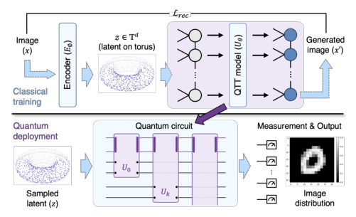
<figcaption class="paper-figure-caption"><b>Fig 2.</b> Figure 2: The illustration of classical training and quantum deployment pipelines.</figcaption>
</figure>
<figure class="paper-figure-card">
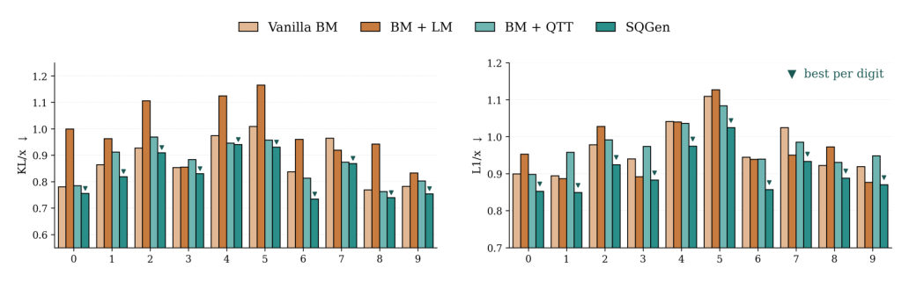
<figcaption class="paper-figure-caption"><b>Fig 3.</b> Figure 3: MNIST image generation on per digit. Side-by-side bars compare the four configurations on KL/x (left) and L1/x (right); ∇marks the winner per digit.</figcaption>
</figure>
<figure class="paper-figure-card">
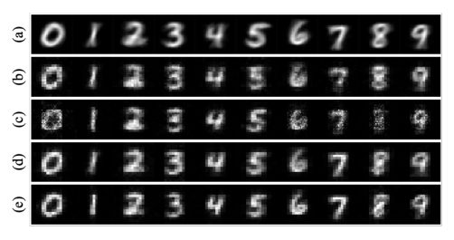
<figcaption class="paper-figure-caption"><b>Fig 4.</b> Figure 4: The generated MNIST samples across the four configurations. (a) empirical class mean (target prototype); (b) Vanilla BM; (c) BM+LM; (d) BM+QTT; (e) SQGen.</figcaption>
</figure>
<figure class="paper-figure-card">
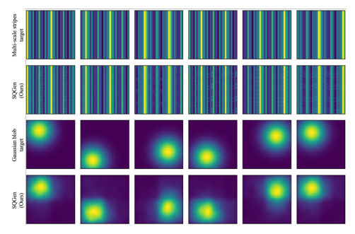
<figcaption class="paper-figure-caption"><b>Fig 5.</b> Figure 5: Synthetic controlled targets and SQGen outputs. Top (rows 1, 2): a multi-scale cosine sum on the column axis; Bottom (rows 3, 4): 2-D Gaussian blobs on z ∈T2.</figcaption>
</figure>
</div>

<p><strong>Summary.</strong> This paper introduces SQGen, a novel quantum generator that uses a Quantized Tensor Train structure enhanced by latent modulation to generate images directly on quantum hardware. By training classically and ensuring the inference path is purely quantum, it overcomes major hurdles like decoder dependency and circuit depth limitations for end-to-end quantum machine learning.</p>
<p><strong>Why it may be interesting.</strong> While focused on image generation, the rigorous use of tensor network structures (QTT) combined with advanced conditioning techniques (latent modulation) provides a powerful framework for modeling complex quantum correlations in structured physical systems beyond simple state preparation.</p>
<details>
<summary>Detailed structure</summary>
<p><strong>Main problem.</strong> The core challenge is generating high-fidelity, image-scale data directly from quantum circuits on NISQ hardware without relying on a classical decoder to maintain end-to-end quantum advantage.</p>
<p><strong>Main result.</strong> SQGen successfully trains stably and generates images end-to-end using a shallow circuit structure that incorporates latent modulation, achieving state-of-the-art reconstruction quality metrics.</p>
<p><strong>Method.</strong> The authors propose a full quantum generator built on a Quantized Tensor Train (QTT) skeleton, enhanced with latent modulation to condition the generation process. Training is performed classically by optimizing a differentiable model compatible with native quantum gates.</p>
<p><strong>Model / system.</strong> The model uses a QTT structure where bond indices are mapped onto ancilla qubits. Latent variables are injected into rotation angles via an exact additive factorization, allowing for structured conditioning while keeping the inference path purely quantum.</p>
<p><strong>Key observables.</strong> Per-sample reconstruction quality (KL divergence and L1 distance), sample diversity, and circuit complexity metrics.</p>
<p><strong>Important parameters / regimes.</strong> Bond rank ($\chi$), latent dimension ($d$), noise strength ($p$), and the torus prior $    ext{T}^d$ for the latent variable $z$.</p>
<p><strong>Assumptions / limitations.</strong> The model assumes that the quantum process can be accurately represented by a QTT structure, and it relies on classical training to establish parameters that map one-to-one onto native quantum gates.</p>
<p><strong>Figures summary.</strong> Figures illustrate the SQGen architecture using latent modulation within the QTT skeleton; comparison tables (e.g., Table 3) benchmark performance against various quantum image generation families.</p>
<p><strong>Paper structure.</strong> The paper introduces the problem, details the novel QTT structure and latent modulation mechanism, describes the classical training pipeline with a torus prior, and validates the end-to-end process through extensive numerical experiments on MNIST and synthetic data.</p>
</details>
<details>
<summary>Abstract</summary>
<p>Generating images directly from quantum systems is an attractive but unresolved goal on NISQ hardware. Existing quantum generators face several coupled obstacles: barren plateaus that block trainability, expensive quantum circuit preparation, and hardware noise that erodes quantum information with depth. A further difficulty is producing image-scale output without a classical decoder, whose use would otherwise break the end-to-end quantum advantage. We propose SQGen, a full quantum generator built on a quantized tensor train (QTT) with a latent modulation architecture. Specifically, SQGen promotes the QTT bond index of the target pixel distribution to ancilla bond qubits, so that each circuit site operates locally on a bond register plus the two physical qubits that carry the row- and column-bit of one image scale. We further introduce latent modulation: each re-uploading rotation is factorized at the angle level into a trainable main path plus an additive latent term, reducing to the trainable main path when the latent term is disabled. During training, we create a differentiable model in the classical system under gate-compatibility constraints, with a torus prior as the latent distribution. After training, every operator maps one-to-one to a native quantum gate, yielding a compact, deployable quantum circuit with no classical decoder in the inference path. Together, these design choices address the obstacles raised above. Extensive experiments on image datasets and synthetic data demonstrate that SQGen trains stably, generates images end-to-end from a shallow circuit with no classical decoder, and shows promising feasibility on real quantum hardware.</p>
</details>
<p><sub><a href="#top">↑ back to top</a></sub></p>

<p><a id="paper-2607.05897"></a></p>
<h3 id="strictly-local-tile-code-architectures-on-two-dimensional-planar-lattices"><a href="http://arxiv.org/abs/2607.05897v1">Strictly Local Tile-Code Architectures on Two-Dimensional Planar Lattices</a></h3>
<p><strong>Authors:</strong> Yoonjin Bae, Chae-Yeun Park<br>
<strong>Type:</strong> theory · <strong>Category:</strong> quantum information and computing · <strong>PDF:</strong> <a href="https://arxiv.org/pdf/2607.05897v1">https://arxiv.org/pdf/2607.05897v1</a><br>
<strong>Analysis basis:</strong> full PDF text, analyzed in chunks
<strong>Topic relevance:</strong> <code>QC/QI experiment</code> <strong>1/5</strong> · <code>methods for driven-dissipative</code> <strong>1/5</strong></p>
<div class="figure-strip-hint">↔ Scroll figures horizontally</div>
<div class="paper-figures-scroll">
<figure class="paper-figure-card">
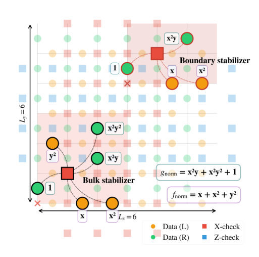
<figcaption class="paper-figure-caption"><b>Fig 1.</b> FIG. 1. Illustration of the [[288, 8, 12]] tilecode family with Lx = Ly = 6 and distance d = 4. The lattice structure shows data qubits (circles) positioned on edges: Data L qubits (or- ange) on horizontal edges and Data R qubits (green) on verti- cal edges. Check operators (squares) are positioned at vertices and faces: X-check operators (red) and Z-check operators (blue). Two representative X-type stabilizers are highlighted: a bulk stabilizer with weight 6 (black border) and a bound- ary stabilizer with weight 4 (red border), each connected to its support qubits via dashed curves. The semi-transparent shaded regions indicate the 3×3 lattice support areas, with X markers denoting the...</figcaption>
</figure>
<figure class="paper-figure-card">
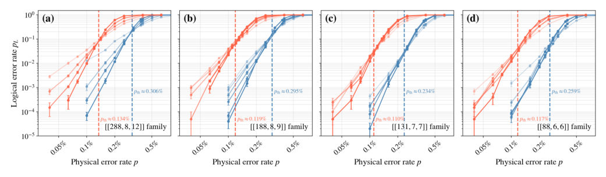
<figcaption class="paper-figure-caption"><b>Fig 2.</b> FIG. 2. Logical error rate pL versus physical error rate p for the (a) [[288, 8, 12]], (b) [[188, 8, 9]], (c) [[131, 7, 7]], and (d) [[88, 6, 6]] code families under the SI1000 noise model. Blue curves correspond to results without locality constraints, and red curves to results with SWAP routing, where two-qubit gates are only allowed between nearest-neighbor qubits. Within each panel, lighter shades indicate smaller code distances (see Table I). Dashed vertical lines indicate the threshold for each family obtained from the finite-size scaling.</figcaption>
</figure>
<figure class="paper-figure-card">
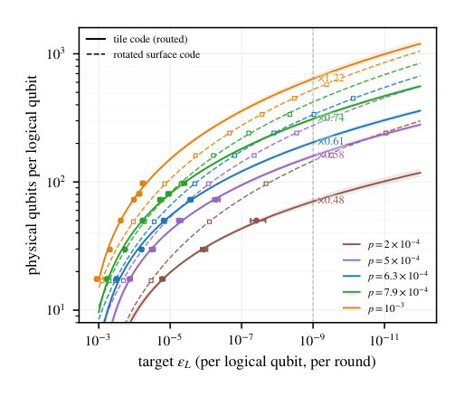
<figcaption class="paper-figure-caption"><b>Fig 3.</b> FIG. 3. The number of physical qubits per logical qubit needed to reach a target error rate ϵL under the SI1000 model, for the routed [[288, 8, 12]] family (solid) and the rotated sur- face code (dashed). Colors denote the physical error rate p, and bands are bootstrap 1σ ranges. Circles and squares are directly simulated instances. Labels give the tile-to-surface ratio at ϵL = 10−9 (dashed vertical line).</figcaption>
</figure>
<figure class="paper-figure-card">
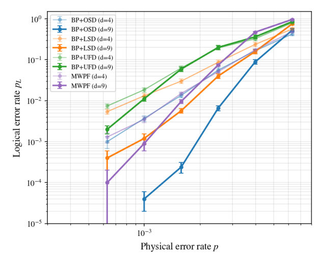
<figcaption class="paper-figure-caption"><b>Fig 4.</b> FIG. 4. Logical error rate pL as a function of the physical error rate p for the [[288, 8, 12]] tile code under the standard depolarizing noise model, for code distances d = 4 (lighter) and d = 9 (darker). Four decoding algorithms are compared: BP+OSD, BP+LSD, BP+UFD (BeliefFind), and MWPF. All BP-based decoders use the same front-end (min-sum, scaling factor 0.5, max 2000 iterations). MWPF uses cluster_node_limit = 500 for d = 4 and limit = 200 for d = 9.</figcaption>
</figure>
<figure class="paper-figure-card">
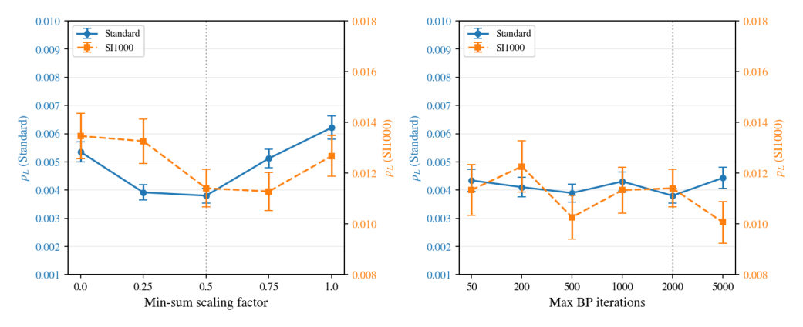
<figcaption class="paper-figure-caption"><b>Fig 5.</b> FIG. 5. Hyperparameter sweep for the BP+OSD decoder applied to the no-routing [[288, 8, 12]] circuit (d = 4) at p = 10−3</figcaption>
</figure>
</div>

<p><strong>Summary.</strong> This paper analyzes Tile Codes for fault-tolerant quantum computation on 2D lattices, focusing on implementing syndrome extraction using only local interactions. By developing optimized routing schemes, they show that while locality imposes a threshold penalty, the resulting codes offer superior qubit efficiency compared to surface codes at low physical error rates. The work validates planar qLDPC codes as a viable alternative for near-term quantum hardware.</p>
<p><strong>Why it may be interesting.</strong> This work provides concrete, hardware-aware comparisons of quantum error correcting codes, directly addressing the practical constraints (like nearest-neighbor connectivity) that limit theoretical proposals in superconducting or solid-state quantum computing platforms.</p>
<details>
<summary>Detailed structure</summary>
<p><strong>Main problem.</strong> The paper aims to develop and analyze strictly local Tile-Code Architectures for fault-tolerant quantum computation on 2D planar lattices, seeking to improve encoding efficiency over the surface code.</p>
<p><strong>Main result.</strong> Routing syndrome extraction circuits significantly reduces the error threshold of tile codes when nearest-neighbor connectivity is enforced. Furthermore, routed tile codes become more qubit-efficient than the surface code below a critical physical error rate ($p^* \approx 0.08\%$).</p>
<p><strong>Method.</strong> The authors developed an exhaustive search algorithm for SWAP-based routing schemes to implement syndrome extraction circuits and compared performance using various decoding algorithms like BP+OSD.</p>
<p><strong>Model / system.</strong> The study focuses on Tile Codes, a family of planar quantum low-density parity-check (qLDPC) codes, implemented on a two-dimensional square lattice. The analysis involves simulating error correction under the SI1000 noise model and standard depolarizing noise.</p>
<p><strong>Key observables.</strong> Circuit-level thresholds ($p_{th}$), resource footprint (physical qubits per logical qubit), and logical error rate ($p_L$) vs. physical error rate ($p$).</p>
<p><strong>Important parameters / regimes.</strong> The encoding efficiency $kd^2/n$, the crossover physical error rate $p^* \approx 0.08\%$, and the noise model parameters (SI1000).</p>
<p><strong>Assumptions / limitations.</strong> The analysis assumes that SWAP gates are native operations, and optimal routing schedules are found within a specific class of uniform SWAP direction assignments.</p>
<p><strong>Figures summary.</strong> Figures illustrate code constructions on lattices, compare $p_L$ vs. $p$ for different decoders (e.g., BP+OSD vs. others), and show the resource efficiency comparison between routed tile codes and surface codes.</p>
<p><strong>Paper structure.</strong> The paper progresses by first defining the local architecture and developing routing schemes; it then analyzes the resulting circuit-level thresholds under noise models; finally, it compares decoding performance across multiple algorithms and assesses qubit resource efficiency against established codes like the surface code.</p>
</details>
<details>
<summary>Abstract</summary>
<p>Tile codes are a family of planar quantum low-density parity-check (qLDPC) codes with weight-6 stabilizers and open boundary conditions, offering an encoding efficiency $kd^2/n$ of up to four times that of the surface code. In this work, we develop an exhaustive search algorithm for finding SWAP-based routing schemes that implement syndrome extraction for four tile-code families using only nearest-neighbor interactions on a two-dimensional square lattice, matching the connectivity of the surface code. Using explicitly constructed routed syndrome-extraction circuits decoded with BP+OSD, we estimate the circuit-level thresholds of these code families. For the SI1000 noise model, the threshold without such a connectivity constraint is obtained in a range 0.23%-0.31%, while it decreases to 0.11%-0.13% with routing, representing a reduction factor of around two to three. Despite this threshold penalty, our resource-footprint analysis shows that routed tile codes require fewer physical qubits per logical qubit than the surface code at sufficiently low physical error rates: Under the SI1000 noise model, we find a crossover near $p^*\approx 0.08\%$, below which routed tile codes become more qubit-efficient, with an advantage that grows monotonically as the physical error rate decreases.</p>
</details>
<p><sub><a href="#top">↑ back to top</a></sub></p>

<p><a id="paper-2607.05959"></a></p>
<h3 id="universal-quantum-cloning-beyond-noncontextual-theory"><a href="http://arxiv.org/abs/2607.05959v1">Universal quantum cloning beyond noncontextual theory</a></h3>
<p><strong>Authors:</strong> Min Namkung, Hyang-Tag Lim<br>
<strong>Type:</strong> theory · <strong>Category:</strong> quantum information and computing · <strong>PDF:</strong> <a href="https://arxiv.org/pdf/2607.05959v1">https://arxiv.org/pdf/2607.05959v1</a><br>
<strong>Analysis basis:</strong> full PDF text, analyzed in chunks
<strong>Topic relevance:</strong> <code>entanglement &amp; information structure</code> <strong>1/5</strong> · <code>quantum measurements</code> <strong>1/5</strong></p>
<div class="figure-strip-hint">↔ Scroll figures horizontally</div>
<div class="paper-figures-scroll">
<figure class="paper-figure-card">
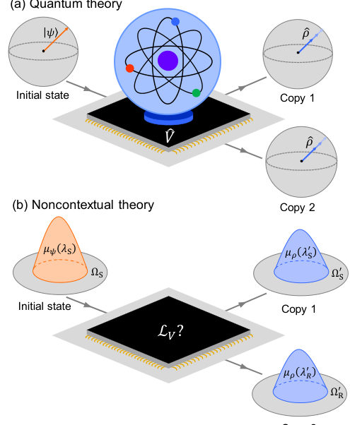
<figcaption class="paper-figure-caption"><b>Fig 1.</b> FIG. 1. Conceptual figure of a deterministic universal cloning scheme within both quantum and noncontextual theories. (a) Description of the scheme within quantum theory, where ap- proximated copies ˆρ are produced from an unknown pure (qubit) state |ψ⟩via a unitary operation ˆU, together with ancilla systems. (b) Description of the scheme within noncon- textual theory, where the unknown epistemic state µψ(λS) is copied via a transformation L.</figcaption>
</figure>
<figure class="paper-figure-card">
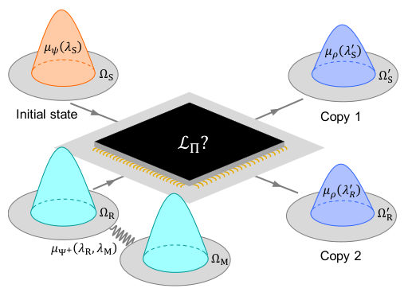
<figcaption class="paper-figure-caption"><b>Fig 2.</b> FIG. 2. Conceptual figure of postselection-based universal cloning within noncontextual theory. First, an unknown state µψ(λS) and µΨ+(λR, λM) of Eq. (13) is prepared, and a non- determinstic transformation LΠ is performed on ΩS and ΩR, yielding two approximated copies µρ(λ′ S) and µρ(λ′ R).</figcaption>
</figure>
</div>

<p><strong>Summary.</strong> This paper rigorously proves that universal quantum cloning is fundamentally contextual. By contrasting the process with an idealized 'noncontextual theory,' the authors show that any attempt to model cloning using non-contextual probabilities leads to mathematical contradictions or trivial, meaningless results. This highlights a deep structural difference between quantum mechanics and classical probability theories.</p>
<p><strong>Why it may be interesting.</strong> This work provides a foundational test case for quantum theory's non-classical features, showing how fundamental processes like state copying necessitate contextuality when viewed through the lens of classical probability models.</p>
<details>
<summary>Detailed structure</summary>
<p><strong>Main problem.</strong> The work aims to theoretically prove that universal quantum cloning, which is possible in standard quantum mechanics, cannot be replicated within the framework of a noncontextual theory.</p>
<p><strong>Main result.</strong> Universal quantum cloning exhibits an intrinsically contextual nature, as demonstrated by mathematical contradictions arising when assuming its existence in a noncontextual model. Specifically, attempts to model it yield only maximally mixed partial states or violate necessary conditions for preserving distinguishability (confusability).</p>
<p><strong>Method.</strong> The analysis involves comparing the unitary operations of quantum mechanics with analogous transformations derived from an operational statistical model called 'noncontextual theory.' Key mathematical tools include analyzing 'confusability' and deriving constraints on these noncontextual transformations.</p>
<p><strong>Model / system.</strong> The system under study is the process of cloning unknown quantum states (qubits), specifically examining $N 	o M$ scenarios. The theoretical comparison is between standard quantum mechanics and an operational statistical model that assumes context-independent probabilities.</p>
<p><strong>Key observables.</strong> Fidelity ($f$), Confusability ($c_{\psi, e\psi}$), and the resulting partial states after cloning attempts.</p>
<p><strong>Important parameters / regimes.</strong> The number of input to output copies ($N 	o M$) and the fidelity parameter $f$.</p>
<p><strong>Assumptions / limitations.</strong> The analysis assumes that if a process cannot be described by preserving 'confusability' within the noncontextual framework, it must be fundamentally contextual.</p>
<p><strong>Figures summary.</strong> Figure 1 conceptually compares deterministic universal cloning in quantum theory (unitary $\hat{U}$) versus noncontextual theory ($L$). Figure 2 illustrates postselection-based universal cloning in the noncontextual model.</p>
<p><strong>Paper structure.</strong> The paper develops by first establishing the theoretical framework of noncontextuality, then applying this framework to the $1 	o 2$ and general $N 	o M$ cloning scenarios. It uses specific mathematical calculations involving confusability preservation conditions to derive contradictions that prove contextuality.</p>
</details>
<details>
<summary>Abstract</summary>
<p>Quantum theory fundamentally forbids the perfect copying of an arbitrary unknown quantum state, according to a principle known as the no-cloning theorem. Nevertheless, it is possible to construct a deterministic quantum map that produces multiple approximate copies of an unknown quantum state. This task is referred to as universal quantum cloning, further facilitating numerous quantum technologies such as quantum cryptography and quantum communication. In this work, we theoretically verify that the universal quantum cloning cannot be realized within a noncontextual theory, highlighting its intrinsically nonclassical nature. Our verification first {focuses on revealing that} $1\rightarrow2$ cloning scenario {is fully contextual}, and {further covers general examples to observe the contextual behavior of} $N\rightarrow M$ scenario. We believe that our results regarding quantum cloning serve a key role for understanding both quantum foundation and application.</p>
</details>
<p><sub><a href="#top">↑ back to top</a></sub></p>

<p><a id="paper-2607.06332"></a></p>
<h3 id="anomalously-high-quasiparticle-thermal-conductivity-in-the-underdoped-cuprate-superconductor-hgbamath862mathcuomath863math"><a href="http://arxiv.org/abs/2607.06332v1">Anomalously high quasiparticle thermal conductivity in the underdoped cuprate superconductor HgBa$_{2}$CuO$_{4+δ}$</a></h3>
<p><strong>Authors:</strong> Jordan Baglo, Quentin Barthélemy, Étienne Lefrançois, Anne Forget, Dorothée Colson, Cyril Proust, Louis Taillefer<br>
<strong>Type:</strong> experiment · <strong>Category:</strong> strongly correlated electrons · <strong>PDF:</strong> <a href="https://arxiv.org/pdf/2607.06332v1">https://arxiv.org/pdf/2607.06332v1</a><br>
<strong>Analysis basis:</strong> full PDF text, analyzed in chunks
<strong>Topic relevance:</strong> <code>non-equilibrium dynamics</code> <strong>1/5</strong></p>
<div class="figure-strip-hint">↔ Scroll figures horizontally</div>
<div class="paper-figures-scroll">
<figure class="paper-figure-card">
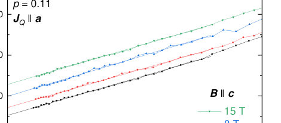
<figcaption class="paper-figure-caption"><b>Fig 1.</b> FIG. 1. Low temperature thermal conductivity of Hg1201 at p = 0.11 measured at several magnetic field values as indicated, plotted as κ/T vs T. The observed linear low- temperature behavior is used to extrapolate to T = 0 (solid lines) to provide the κ0(B)/T data shown in Fig. 2.</figcaption>
</figure>
<figure class="paper-figure-card">
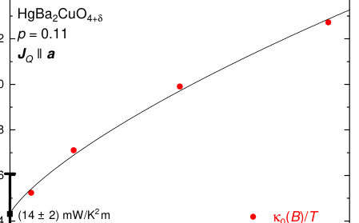
<figcaption class="paper-figure-caption"><b>Fig 2.</b> FIG. 2. Extrapolated T →0 thermal conductivity data κ0(B)/T resulting from the fits in Fig. 1, plotted as κ0/T vs B. The solid line is a fit to the K¨ubert-Hirschfeld model [27] (Eq. 2). The resulting extrapolation to B = 0 gives κ0/T = 14 ± 2 mW/K2m (this error includes the uncertainty in sam- ple geometry).</figcaption>
</figure>
<figure class="paper-figure-card">
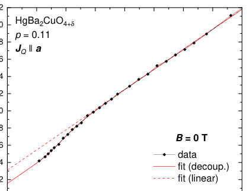
<figcaption class="paper-figure-caption"><b>Fig 3.</b> FIG. 4. (a) Low temperature thermal conductivity of Hg1201 at p = 0.11 measured at three magnetic field values, including B = 0 T (black points), plotted as κ/T vs T; lines are linear fits in the interval from 0.1 to 0.8 K. (b) Zoom on the zero- field data: The clear low-temperature downturn suggests the onset of electron-phonon decoupling, here fit to Eq. A.1 (red solid line), with a simple linear fit shown for comparison (red dashed line); for higher fields this decoupling is not discernible down to 100 mK (see panel (a) and Fig. 1).</figcaption>
</figure>
</div>

<p><strong>Summary.</strong> This work measures the low-temperature thermal conductivity in the underdoped cuprate $    ext{HgBa}<em 4_delta="4+\delta">2 ext{CuO}</em>$ to probe its nodal quasiparticle structure. By analyzing the field dependence of the residual thermal conductivity, the authors extract a large velocity ratio ($v_F/v_\Delta$). This result strongly suggests that the Fermi surface is more complex than previously assumed, likely involving multiple electronic pockets contributing to the heat transport.</p>
<p><strong>Why it may be interesting.</strong> The investigation of thermal transport provides a highly sensitive probe into the gap structure and electronic dimensionality of strongly correlated materials like cuprates, offering insights complementary to ARPES or quantum oscillation measurements.</p>
<details>
<summary>Detailed structure</summary>
<p><strong>Main problem.</strong> To investigate anomalous properties of high-Tc cuprate superconductors, specifically determining the nodal quasiparticle velocity ratio ($v_F / v_\Delta$) using thermal conductivity measurements.</p>
<p><strong>Main result.</strong> The measured residual linear thermal conductivity ($\kappa_0/T$) yields an anomalously large quasiparticle velocity ratio ($v_F / v_\Delta = 23 \pm 3$), suggesting the presence of more than one Fermi surface sheet crossing the nodal line.</p>
<p><strong>Method.</strong> Measuring in-plane longitudinal thermal conductivity ($\kappa$) at very low temperatures and extrapolating the field dependence using the K¨ubert-Hirschfeld model to extract the zero-field residual term $\kappa_0/T$.</p>
<p><strong>Model / system.</strong> The study focuses on the single-layer cuprate superconductor $  ext{HgBa}<em 4_delta="4+\delta">2 ext{CuO}</em>$). The analysis uses theoretical models for nodal d-wave superconductors relating $\kappa_0/T$ to the ratio of Fermi and gap velocities.}$ ($ ext{Hg1201</p>
<p><strong>Key observables.</strong> In-plane longitudinal thermal conductivity ($\kappa$), the residual linear term $\kappa_0(B)/T$, and the velocity ratio $v_F / v_\Delta$.</p>
<p><strong>Important parameters / regimes.</strong> $T_c = 76 	ext{ K}$, doping $p = 0.11$, low temperatures (down to $0.1 	ext{ K}$), magnetic field dependence ($B$).</p>
<p><strong>Assumptions / limitations.</strong> The analysis assumes contributions from only a single line node per quadrant when calculating the velocity ratio, though this assumption is challenged by other experimental results.</p>
<p><strong>Figures summary.</strong> Figures show $\kappa/T$ vs. $T$ at various magnetic fields, and the extrapolation of $\kappa_0(B)/T$ vs. $B$, which are fitted to theoretical models.</p>
<p><strong>Paper structure.</strong> The paper establishes the physical system and measurement technique (thermal conductivity). It applies a theoretical model relating $\kappa_0/T$ to nodal properties, derives an anomalously large velocity ratio from the data, and concludes by suggesting that this implies multiple Fermi surface sheets are present in the material.</p>
</details>
<details>
<summary>Abstract</summary>
<p>The single-layer cuprate superconductor HgBa$_{2}$CuO$_{4+δ}$ (Hg1201) is an ideal candidate for investigating many properties of cuprates with minimal disorder and without the complication of multiple CuO$_2$ layers. Here we measure the in-plane longitudinal thermal conductivity $κ$ of underdoped Hg1201 ($T_c$ = 76 K, $p$ = 0.11) at dilution refrigerator temperatures to extract the nodal quasiparticle velocity ratio $v_F/v_Δ$. Assuming contributions from only a single line node per quadrant on the Fermi surface leads to a value of $v_F/v_Δ$ = $23 \pm 3$, anomalously large compared to other cuprates at similar dopings. In conjunction with the anomalously high quasiparticle specific heat of Hg1201 in the normal state reported previously at a similar doping, this points to more than one Fermi surface sheet crossing the nodal line, suggesting the presence of more than the single small electron pocket detected by quantum oscillations.</p>
</details>
<p><sub><a href="#top">↑ back to top</a></sub></p>

<p><a id="paper-2607.05634"></a></p>
<h3 id="complete-local-expansion-of-the-availability-function-in-random-sequential-adsorption-of-aligned-squares-at-low-density-termination-at-fourth-order"><a href="http://arxiv.org/abs/2607.05634v1">Complete local expansion of the availability function in random sequential adsorption of aligned squares at low density: Termination at fourth order</a></h3>
<p><strong>Authors:</strong> F. Tolea, M. Tolea<br>
<strong>Type:</strong> theory · <strong>Category:</strong> statistical mechanics · <strong>PDF:</strong> <a href="https://arxiv.org/pdf/2607.05634v1">https://arxiv.org/pdf/2607.05634v1</a><br>
<strong>Analysis basis:</strong> full PDF text, analyzed in chunks
<strong>Topic relevance:</strong> <code>Keldysh / 2PI / non-Gaussian methods</code> <strong>1/5</strong></p>
<div class="figure-strip-hint">↔ Scroll figures horizontally</div>
<div class="paper-figures-scroll">
<figure class="paper-figure-card">
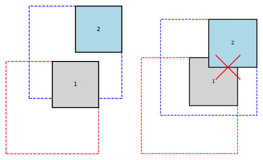
<figcaption class="paper-figure-caption"><b>Fig 1.</b> FIG. 2: (a) Two exclusion zones can overlap; the overlapping area must be added back to the availability, as it has been subtracted twice at first order (single-square contribution). (b) The squares themselves cannot overlap.</figcaption>
</figure>
<figure class="paper-figure-card">
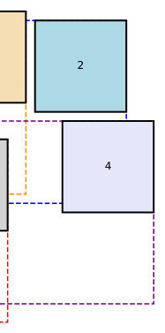
<figcaption class="paper-figure-caption"><b>Fig 2.</b> FIG. 4: Example of overlap between four exclusion zones. The common region corresponds to the fourth-order correction.</figcaption>
</figure>
</div>

<p><strong>Summary.</strong> This paper provides a detailed theoretical derivation for the low-density behavior of the availability function during Random Sequential Adsorption (RSA) of squares. By employing an inclusion-exclusion expansion based on geometric overlaps, the authors derive the polynomial coefficients up to fourth order. The work is significant because it establishes the exact local overlap hierarchy for this physical process and validates its results against numerical simulations.</p>
<p><strong>Why it may be interesting.</strong> While focused on classical packing problems, the rigorous application of inclusion-exclusion principles to calculate system properties based on local geometric constraints is a powerful technique applicable to understanding correlation functions in many-body quantum systems or open quantum dynamics where local approximations are used.</p>
<details>
<summary>Detailed structure</summary>
<p><strong>Main problem.</strong> The authors derive the low-coverage expansion of the availability function, $\alpha(q)$, for Random Sequential Adsorption (RSA) of aligned squares.</p>
<p><strong>Main result.</strong> They establish that this local overlap hierarchy terminates exactly at fourth order due to geometric constraints, yielding a complete polynomial approximation for low densities.</p>
<p><strong>Method.</strong> The derivation systematically uses the inclusion-exclusion principle applied to the overlapping exclusion regions created by deposited squares.</p>
<p><strong>Model / system.</strong> The model is Random Sequential Adsorption (RSA) of aligned squares on a surface or lattice. The process is irreversible, leading to a jammed state characterized by coverage $q$.</p>
<p><strong>Key observables.</strong> The availability function $\alpha(q)$, which measures the fraction of positions available for an additional square insertion.</p>
<p><strong>Important parameters / regimes.</strong> Low-density regime (low coverage $q$), and the geometric overlap structure involving up to four squares.</p>
<p><strong>Assumptions / limitations.</strong> The analysis is restricted to the low-density limit, assuming that only local overlaps (up to four bodies) contribute significantly to the expansion coefficients.</p>
<p><strong>Figures summary.</strong> Figures illustrate the exclusion zone of a single square and show how the overlap regions for two and three squares are geometrically accounted for in the inclusion-exclusion corrections.</p>
<p><strong>Paper structure.</strong> The paper builds the expansion $\alpha(q)$ term by term, starting with the first order (single block), then systematically correcting for double overlaps ($C_2$), triple overlaps ($C_3$), and finally confirming the termination at fourth order ($C_4$) using both analytical geometry and numerical simulation.</p>
</details>
<details>
<summary>Abstract</summary>
<p>We consider random sequential adsorption (RSA) of aligned squares and derive the low-coverage expansion of the availability function alpha(q), the fraction of positions accessible to an additional square, up to fourth order in the coverage q. At low coverage, the reduction of available space can be understood in terms of geometric overlap between exclusion regions created by previously deposited squares. A single square blocks a finite area; pairs of squares may have overlapping exclusion zones, reducing the total blocked area; similarly, three and four squares can share a common overlap region, leading to higher-order corrections. These contributions can be systematically accounted for through an inclusion-exclusion expansion based on the geometry of overlapping exclusion regions, with alternating signs dictated by inclusion-exclusion. The expansion terminates exactly at fourth order, since no more than four deposited squares can simultaneously overlap the exclusion region of a trial insertion. The coefficients are obtained by explicit enumeration of all such geometrically admissible configurations and are further confirmed by numerical simulations on a discrete lattice, showing agreement within statistical uncertainty.</p>
</details>
<p><sub><a href="#top">↑ back to top</a></sub></p>

<p><a id="paper-2607.06430"></a></p>
<h3 id="instabilities-of-fermi-liquids-with-arbitrary-forward-scattering-exact-approach"><a href="http://arxiv.org/abs/2607.06430v1">Instabilities of Fermi Liquids with Arbitrary Forward Scattering: Exact Approach</a></h3>
<p><strong>Authors:</strong> Dmitry Miserev, Joel Hutchinson, Herbert Schoeller, Jelena Klinovaja, Daniel Loss<br>
<strong>Type:</strong> theory · <strong>Category:</strong> strongly correlated electrons · <strong>PDF:</strong> <a href="https://arxiv.org/pdf/2607.06430v1">https://arxiv.org/pdf/2607.06430v1</a><br>
<strong>Analysis basis:</strong> full PDF text, analyzed in chunks
<strong>Topic relevance:</strong> <code>Keldysh / 2PI / non-Gaussian methods</code> <strong>1/5</strong></p>
<div class="figure-strip-hint">↔ Scroll figures horizontally</div>
<div class="paper-figures-scroll">
<figure class="paper-figure-card">
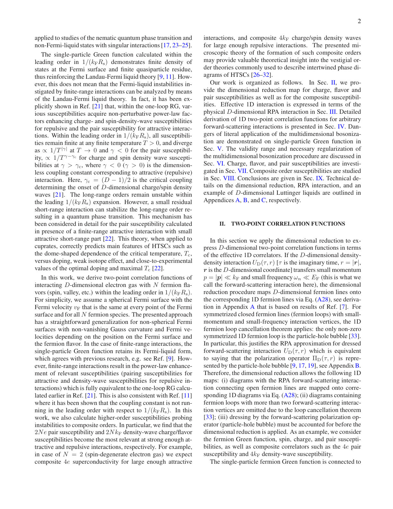
<figcaption class="paper-figure-caption"><b>Fig 1.</b> Low-resolution page preview, page 2</figcaption>
</figure>
<figure class="paper-figure-card">
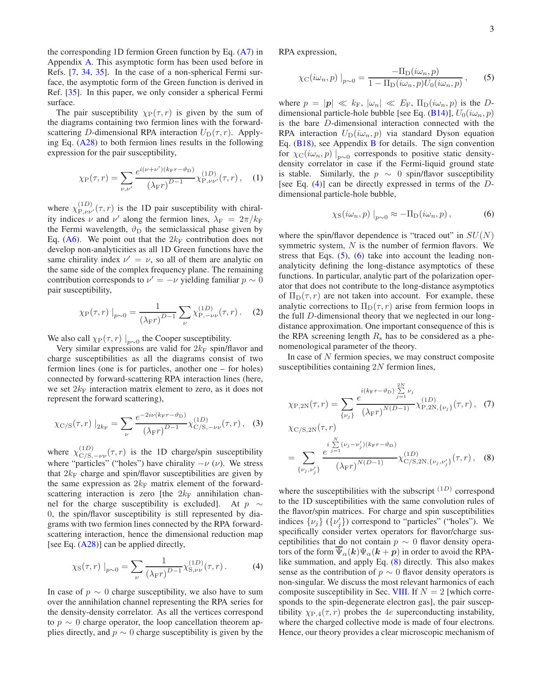
<figcaption class="paper-figure-caption"><b>Fig 2.</b> Low-resolution page preview, page 3</figcaption>
</figure>
<figure class="paper-figure-card">
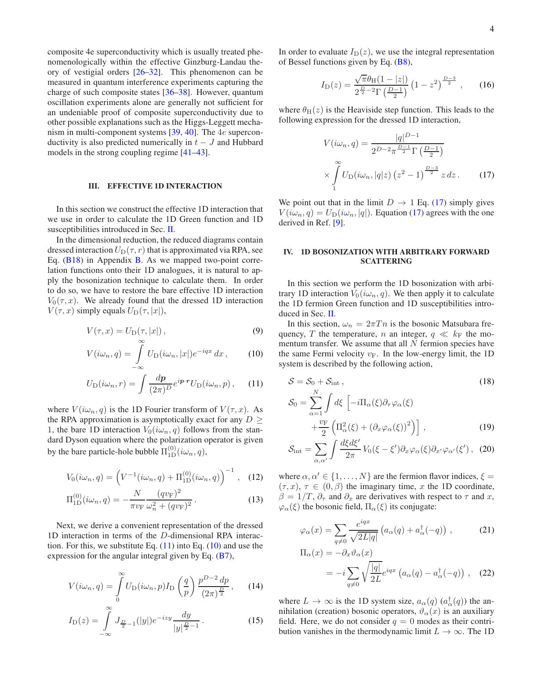
<figcaption class="paper-figure-caption"><b>Fig 3.</b> Low-resolution page preview, page 4</figcaption>
</figure>
<figure class="paper-figure-card">
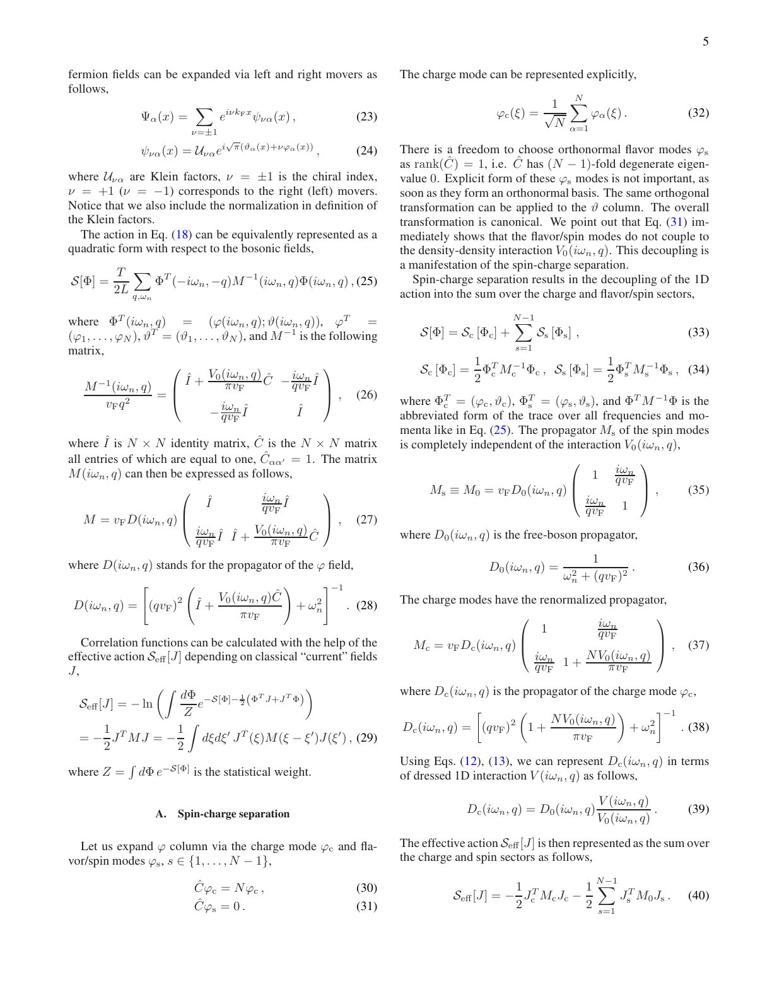
<figcaption class="paper-figure-caption"><b>Fig 4.</b> Low-resolution page preview, page 5</figcaption>
</figure>
<figure class="paper-figure-card">
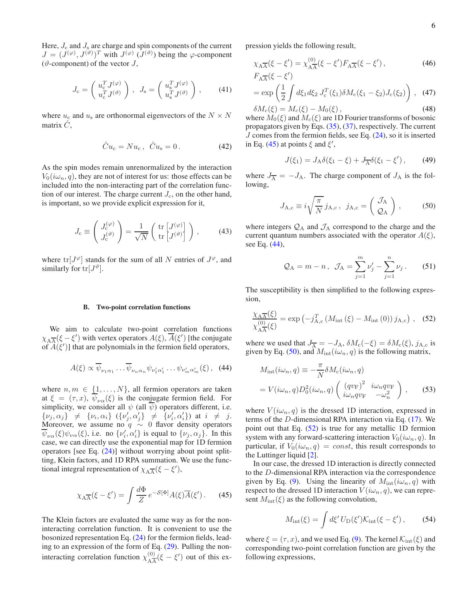
<figcaption class="paper-figure-caption"><b>Fig 5.</b> Low-resolution page preview, page 6</figcaption>
</figure>
</div>

<p><strong>Summary.</strong> This paper develops an exact theoretical framework using dimensional reduction to analyze interacting Fermi liquids with forward scattering. By mapping the problem onto solvable 1D bosonic theories, the authors show that while single-particle physics remains stable, many-body instabilities are enhanced by interactions, predicting specific superconducting or density wave instabilities in certain regimes.</p>
<p><strong>Why it may be interesting.</strong> The rigorous application of dimensional reduction and bosonization techniques to study correlation functions in higher dimensions provides powerful analytical tools applicable to strongly correlated electron models where mean-field or simple RPA approaches fail.</p>
<details>
<summary>Detailed structure</summary>
<p><strong>Main problem.</strong> The work investigates the instabilities of Fermi liquids when subjected to arbitrary forward-scattering density-density interactions in D dimensions.</p>
<p><strong>Main result.</strong> While single-particle properties remain Fermi-liquid-like, many-body channels are significantly dressed by finite-range interactions, leading to singular power-law scaling for relevant susceptibilities at low temperatures. Stable long-range order is generally not possible from forward scattering alone.</p>
<p><strong>Method.</strong> The authors employ a dimensional reduction technique, mapping D-dimensional correlation functions onto effective 1D correlators which are then evaluated exactly using a 1D bosonizable (Gaussian) theory.</p>
<p><strong>Model / system.</strong> The system is an N-fold degenerate D-dimensional electron gas with a spherical Fermi surface, interacting via small momentum transfer forward-scattering interactions. The analysis extends to finite-range interactions ($R_{\mathrm{s}} \gg 1/k_{\mathrm{F}}$).</p>
<p><strong>Key observables.</strong> Fermion Green function, pair susceptibility ($\chi_{2e}$), charge/flavor susceptibilities ($\chi_{2k_F}$, $\chi_{2N k_F}$), and the single-particle spectral function.</p>
<p><strong>Important parameters / regimes.</strong> Temperature ($T 	o 0$), interaction range ($R_{\mathrm{s}}$), dimensionality ($D$), and degeneracy ($N$).</p>
<p><strong>Assumptions / limitations.</strong> The analysis relies on dimensional reduction techniques equivalent to Haldane patch construction, assuming a spherical Fermi surface, and performing calculations in the leading order of $(kR_s)^{-1}$.</p>
<p><strong>Paper structure.</strong> The paper systematically applies dimensional reduction to map D-dimensional correlation functions onto 1D bosonizable theories. It first confirms single-particle Fermi liquid behavior, then analyzes how many-body susceptibilities are dressed by interactions, concluding with specific predictions for composite instabilities like $4e$ superconductivity.</p>
</details>
<details>
<summary>Abstract</summary>
<p>In this work, we consider $N$-fold degenerate $D$-dimensional electron gas with spherical Fermi surface and arbitrary forward-scattering density-density interaction transferring small momentum compared to the Fermi momentum $k_{\mathrm{F}}$. The dimensional reduction that is mathematically equivalent to the Haldane patch construction and similar multidimensional bosonization techniques, provides a natural map of two-point $D$-dimensional correlation functions (fermion Green function, susceptibilities etc.) onto effective one-dimensional (1D) correlators with the same diagrammatic structure, which can be evaluated exactly within a 1D bosonizable (Gaussian) theory. We then apply this formalism to evaluate the fermion Green function, pair and charge/flavor susceptibilities, as well as the composite correlation functions for the case of a finite-range interaction, where the interaction range $R_{\mathrm{s}} \gg 1/k_{\mathrm{F}}$ is large compared to the Fermi wavelength. First, we find that the single-particle spectral function remains Fermi-liquid-like which is fully consistent with the previous research. In contrast to the single-particle sector, the many-body channels are efficiently dressed by finite-range interactions, and this dressing is fully equivalent to the one-loop renormalization group (RG), which is also in line with previous multidimensional bosonization results. Within the forward-scattering model, stable long-range order is not possible, and relevant susceptibilities demonstrate singular power-law scaling with temperature $T$ at $T \to 0$. The rest of the abstract is in the PDF.</p>
</details>
<p><sub><a href="#top">↑ back to top</a></sub></p>

<p><a id="paper-2607.06146"></a></p>
<h3 id="quantum-density-of-states-and-integer-partitions-a-semiclassical-approach"><a href="http://arxiv.org/abs/2607.06146v1">Quantum Density of States and Integer Partitions: A Semiclassical Approach</a></h3>
<p><strong>Authors:</strong> M. V. N. Murthy, Matthias Brack<br>
<strong>Type:</strong> theory · <strong>Category:</strong> statistical mechanics · <strong>PDF:</strong> <a href="https://arxiv.org/pdf/2607.06146v1">https://arxiv.org/pdf/2607.06146v1</a><br>
<strong>Analysis basis:</strong> full PDF text, analyzed in chunks
<strong>Topic relevance:</strong> <code>Keldysh / 2PI / non-Gaussian methods</code> <strong>1/5</strong></p>
<div class="figure-strip-hint">↔ Scroll figures horizontally</div>
<div class="paper-figures-scroll">
<figure class="paper-figure-card">

<figcaption class="paper-figure-caption"><b>Fig 1.</b> Figure 1. An example of the Bessel-smoothed partition density ρ(1)(E). The crosses(red) show the exact values of partitions P(n) when E = n expressed as a sum of distinct squares (see section (5) for more details).</figcaption>
</figure>
<figure class="paper-figure-card">

<figcaption class="paper-figure-caption"><b>Fig 2.</b> Figure 2. Identical bosons in an oscillator potential. Number of possibilities with excitation energy E = 6.</figcaption>
</figure>
<figure class="paper-figure-card">

<figcaption class="paper-figure-caption"><b>Fig 3.</b> Figure 3. Comparison of the exact P(n) (solid line) and the asymptotic density of states ρ(E), where E is a continuous parameter (dashed line). Here and in all other following figures, we have joined the points cor- responding to n by a continuous curve for comparison with the asymptotic behaviour. The error decreases exponentially as E increases so that the asymptotic density approaches the exact density for all E = n.</figcaption>
</figure>
<figure class="paper-figure-card">

<figcaption class="paper-figure-caption"><b>Fig 4.</b> Figure 4. Comparison of the s = 2 exact P(2)(n) (solid line) and the asymptotic density of states ρ(2)(E), where E is a continuous parameter (dashed line).</figcaption>
</figure>
<figure class="paper-figure-card">

<figcaption class="paper-figure-caption"><b>Fig 5.</b> Figure 5. Comparison of the exact Q(n) (solid line) and the asymptotic density of states ρ(E), where E is a continuous parameter (dashed line). The error decreases exponentially as E increases so that the asymptotic density approaches the exact density for all E = n.</figcaption>
</figure>
</div>

<p><strong>Summary.</strong> This review bridges the gap between quantum statistical mechanics and analytic number theory by showing that the density of states for many-body quantum systems mathematically mirrors the counting function for integer partitions. Using semiclassical methods like trace formulas and saddle-point approximations, the authors derive asymptotic formulas connecting these two seemingly disparate fields.</p>
<p><strong>Why it may be interesting.</strong> It provides a powerful mathematical framework showing how fundamental concepts in quantum statistical mechanics (like energy distribution) can yield deep insights into pure number theory problems, suggesting underlying physical principles govern arithmetic structures.</p>
<details>
<summary>Detailed structure</summary>
<p><strong>Main problem.</strong> The paper explores a deep mathematical analogy between calculating the quantum density of states for many-body systems and determining the number of ways an integer can be partitioned into smaller integers.</p>
<p><strong>Main result.</strong> It establishes that the asymptotic, smooth part of the quantum level density reproduces the known formulas for integer partitions (like the Hardy-Ramanujan formula), while specific oscillations relate to classical periodic orbits.</p>
<p><strong>Method.</strong> The primary method involves using semiclassical trace formulas and saddle-point approximations on partition functions derived from statistical mechanics principles.</p>
<p><strong>Model / system.</strong> The analysis considers non-interacting quantum systems whose energy levels dictate the density of states. The mathematical model is generalized to include various statistics (Bose, Fermi) and specific spectral forms, such as those leading to prime partitions.</p>
<p><strong>Key observables.</strong> Quantum Density of States ($
ho(E)$), Number of Partitions ($P(n)$), Entropy ($S$), and the smooth/oscillating parts of $
ho(E)$.</p>
<p><strong>Important parameters / regimes.</strong> Temperature (or inverse temperature $eta$), Energy $E=n$, Spectral exponent $s$, and occupancy parameter $k$.</p>
<p><strong>Assumptions / limitations.</strong> The derivation relies heavily on semiclassical approximations, such as the saddle-point method, to extract asymptotic behavior from complex sums.</p>
<p><strong>Figures summary.</strong> Figure 22 compares the exact partition function count ($P(1)_k(n)$) with its derived asymptotic density of states ($
ho(1)_k(E)$) for a specific spectral case.</p>
<p><strong>Paper structure.</strong> The paper progresses by first establishing the connection via single-particle spectra and trace formulas, then extending this to many-body systems using partition functions, and finally applying these techniques to derive advanced asymptotic results for prime partitions.</p>
</details>
<details>
<summary>Abstract</summary>
<p>In this review we discuss semi-classical methods that are traditionally used to describe many-body systems in physics, but may also be used to describe partitions of integers in analytic number theory. Specifically, we explore the connection between the methods of statistical mechanics and number partitions. Though the two fields appear very different, their fundamental issues bear a close resemblance. In the former case it is the distribution of a given amount of energy among the particles in an ensemble at a given temperature with well defined properties, while in the latter case it is the way an integer is partitioned into other integers, with or without restrictions. We begin with a discussion of the single-particle quantum density of states, also called the level density, in which we illustrate the connection between the density of states and the classical periodic orbits through the semiclassical trace formula. This is then extended to many particle systems. We show that the asymptotic number partition is reproduced by the average (smooth) part of the level density at discrete integer values of the argument. In the especially interesting case of distinct square partitions, pronounced oscillations are well reproduced by the periodic orbit theory in terms of a few orbits characterised by Pythagorean number triples. We speculate on the connection to Fermat's theorem as to why such regular oscillations (though vanishing asymptotically) exist only in this special case. Finally, we discuss some new results for integer partitions of primes, both unrestricted and distinct.</p>
</details>
<p><sub><a href="#top">↑ back to top</a></sub></p>
<h2 id="other-papers-5">Other papers (5)</h2>
<p><em>Papers from primary archives without highlighted authors or any topic match. Click to expand.</em></p>
<details>
<summary>Show other papers</summary>

<p><a id="paper-2607.05865"></a></p>
<h3 id="hidden-complex-structure-in-quotient-space-real-quantum-mechanics"><a href="http://arxiv.org/abs/2607.05865v1">Hidden Complex Structure in Quotient-Space Real Quantum Mechanics</a></h3>
<p><strong>Authors:</strong> Jeongho Bang, Kyoungho Cho, Kyunghyun Baek<br>
<strong>Type:</strong> theory · <strong>Category:</strong> other · <strong>PDF:</strong> <a href="https://arxiv.org/pdf/2607.05865v1">https://arxiv.org/pdf/2607.05865v1</a><br>
<strong>Analysis basis:</strong> full PDF text, analyzed in chunks</p>
<div class="figure-strip-hint">↔ Scroll figures horizontally</div>
<div class="paper-figures-scroll">
<figure class="paper-figure-card">

<figcaption class="paper-figure-caption"><b>Fig 1.</b> Low-resolution page preview, page 2</figcaption>
</figure>
<figure class="paper-figure-card">

<figcaption class="paper-figure-caption"><b>Fig 2.</b> Low-resolution page preview, page 3</figcaption>
</figure>
<figure class="paper-figure-card">

<figcaption class="paper-figure-caption"><b>Fig 3.</b> Low-resolution page preview, page 4</figcaption>
</figure>
<figure class="paper-figure-card">

<figcaption class="paper-figure-caption"><b>Fig 4.</b> Low-resolution page preview, page 5</figcaption>
</figure>
<figure class="paper-figure-card">

<figcaption class="paper-figure-caption"><b>Fig 5.</b> Low-resolution page preview, page 6</figcaption>
</figure>
</div>
<p><strong>Summary.</strong> The paper investigates if quantum mechanics can be formulated purely over real numbers while remaining empirically equivalent to standard complex QM. It demonstrates that achieving this equivalence necessitates imposing strong constraints, such as gauge invariance and a specialized 'balanced' tensor product rule. Ultimately, the authors argue that the theory is mathematically equivalent to complex QM written in a redundant real notation.</p>
<p><strong>Why it may be interesting.</strong> This work directly addresses foundational questions about the mathematical structure of quantum theory, which underpins all applications in AMO physics and quantum information.</p>
<details>
<summary>Detailed structure</summary>
<p><strong>Main problem.</strong> The central question is whether complex numbers are fundamentally necessary for quantum mechanics, or if a formulation over real numbers ($\mathbb{R}$) can be empirically equivalent.</p>
<p><strong>Main result.</strong> The authors conclude that any operational equivalence to standard complex QM requires imposing constraints (like gauge invariance and specific composition rules) such that the theory is best understood as complex QM written in a redundant real notation, not an independent real-amplitude theory.</p>
<p><strong>Method.</strong> The analysis involves comparing predictions from quotient-space constructions over $\mathbb{R}$ against established results from standard complex quantum mechanics ($\mathbb{C}$) using algebraic diagnostics like tensor product structures and gauge invariance requirements.</p>
<p><strong>Model / system.</strong> The model is the mathematical structure of quantum theory itself, specifically analyzing state spaces formulated over real Hilbert spaces versus those naturally defined by complex amplitudes. The focus is on single-system states and composite systems (e.g., in network scenarios).</p>
<p><strong>Key observables.</strong> Physical effects ($\hat{E}$) must preserve an $SO(2)$ gauge generated by the operator $\hat{J}$; violation of source independence under ordinary tensor products.</p>
<p><strong>Important parameters / regimes.</strong> The structure is governed by the distinguished real linear operator $\hat{J}$ such that $\hat{J}^2 = -\mathbb{1}$.</p>
<p><strong>Assumptions / limitations.</strong> Equivalence requires assuming that all physical dynamics and measurements preserve the $SO(2)$ gauge generated by $\hat{J}$, which restricts the observable algebra.</p>
<p><strong>Figures summary.</strong> Not specified, but the notes reference comparisons of dimensions ($    ext{dim}_{\mathbb{R}}$) and numerical violations in Bell-network tests comparing standard vs. quotient factorization.</p>
<p><strong>Paper structure.</strong> The paper systematically compares various real formulations (including those based on quotients) against complex QM predictions, establishing necessary constraints—such as superselection rules and the balanced tensor product ($\otimes_B$)—to achieve empirical equivalence.</p>
</details>
<details>
<summary>Abstract</summary>
<p>Barrios Hita et al. [Phys. Rev. Lett. $\bf{136}$, 240202 (2026)] argued that quantum mechanics can be formulated over the real numbers by replacing the tensor-product postulate with a quotient-space construction, and concluded that complex numbers are therefore a matter of convenience. We show that the operational content of this construction is not that of a generic real Hilbert-space theory. Empirical equivalence requires a distinguished real linear operator $J$ with $J^2 = -\mathbb{1}$, and all physical effects, instruments, and dynamics must preserve the corresponding $SO(2)$ gauge. Moreover, the composite-system rule is a balanced tensor product over this hidden complex structure, not the ordinary tensor product over $\mathbb{R}$. In multipartite network scenarios, this changes the meaning of source independence: canonical real representatives are not source-factorizable in the usual tensor-product sense. Thus, the construction is best understood as standard complex quantum mechanics written in real notation, not as an independent real-amplitude theory. This clarifies what is, and is not, excluded by experiments testing the necessity of complex numbers.</p>
</details>
<p><sub><a href="#top">↑ back to top</a></sub></p>

<p><a id="paper-2607.06075"></a></p>
<h3 id="packet-routing-for-the-quantum-internet"><a href="http://arxiv.org/abs/2607.06075v1">Packet Routing for the Quantum Internet</a></h3>
<p><strong>Authors:</strong> Robert Malaney<br>
<strong>Type:</strong> theory · <strong>Category:</strong> quantum information and computing · <strong>PDF:</strong> <a href="https://arxiv.org/pdf/2607.06075v1">https://arxiv.org/pdf/2607.06075v1</a><br>
<strong>Analysis basis:</strong> full PDF text, analyzed in chunks</p>
<div class="figure-strip-hint">↔ Scroll figures horizontally</div>
<div class="paper-figures-scroll">
<figure class="paper-figure-card">

<figcaption class="paper-figure-caption"><b>Fig 1.</b> Fig. 1. System Model. A typical system set up where IP routing will be required. Satellite S1 wishes to transmit quantum information to node C via nodes A and B. Here a second satellite S2 sends classical data (header information) synchronized to reach node A just ahead of the quantum information from S1 (systems where S1 also sends the classical information are also possible). Node D may be used, as quantum mechanics allows for a superposition of paths ABC and ADC. The network is assumed perfectly synchronized.</figcaption>
</figure>
<figure class="paper-figure-card">

<figcaption class="paper-figure-caption"><b>Fig 2.</b> Fig. 2. The Quantum IP Stack. For direct transmission, classical data from the Base IPv6 Header and the Extension Headers are synchronized so that classical data arrives at the next router’s physical layer just prior to the quantum data. The quantum data is then stored in memory whilst the classical data is propagated up through the stack to the IP layer (teleportation involves a different transmission strategy). If the destination address corresponds to that router, the encapsulated TCP/UDP data is propagated to the Transport layer. Shown here are the standard fields in the IPv6 packet as per the standard [4]. Here, the top three layers of the OSI model are encapsulated into an application...</figcaption>
</figure>
<figure class="paper-figure-card">

<figcaption class="paper-figure-caption"><b>Fig 3.</b> Fig. 3. Quantum Routing Header. A proposed new IPv6 Extension Header that allows for various path superposition outcomes.</figcaption>
</figure>
<figure class="paper-figure-card">

<figcaption class="paper-figure-caption"><b>Fig 4.</b> Fig. 4. Quantum Routing Format. The IPv6 Quantum Routing format for various scenarios.</figcaption>
</figure>
<figure class="paper-figure-card">

<figcaption class="paper-figure-caption"><b>Fig 5.</b> Fig. 6. Quantum Superposition of Quantum Processes. One superposition of Quantum Routing and Quantum Teleportation where the hardware at a router located at Addr 1 invokes a superposition of the processes, triggered by Control Qubit 1. Here, the path su- perposition is triggered by Control Qubit 2 transmitting the quantum information to the destination in superposition via addresses Addr 1 and Addr 2. The information in the quantum Routing Header (top left) is copied and transmitted classically along the two paths in blue. The information in the Teleportation Header (bottom left) is transmitted classically to the destination. Different teleportation maps and control qubits could be added to...</figcaption>
</figure>
</div>
<p><strong>Summary.</strong> This paper proposes a novel architectural modification to the IPv6 protocol stack to facilitate quantum networking functions, such as teleportation and path superposition. By utilizing unused features like Extension Headers, it outlines a pathway for integrating quantum information transfer into existing classical internet infrastructure. The work provides a theoretical blueprint for building the Quantum Internet at the network layer.</p>
<p><strong>Why it may be interesting.</strong> While focused on network protocols, the theoretical framework of encoding complex quantum operations (like superposition) into structured data packets is highly relevant for understanding the physical implementation challenges of distributed quantum computation and communication architectures.</p>
<details>
<summary>Detailed structure</summary>
<p><strong>Main problem.</strong> The core problem is designing a modified Internet Protocol (IP) packet format to enable quantum teleportation, quantum routing (superposition of routes), and superpositions of these processes within the emerging Quantum Internet.</p>
<p><strong>Main result.</strong> The authors propose an architecture utilizing IPv6 Extension Headers to incorporate quantum functionality at the network layer, enabling path superposition while maintaining a minimalist approach to standard alterations.</p>
<p><strong>Method.</strong> The methodology involves adapting the layered structure of the OSI model by proposing new 'Quantum Extension Headers' for IPv6 that carry instructions necessary for quantum operations like teleportation and routing superposition.</p>
<p><strong>Model / system.</strong> The system model is based on modifying the IPv6 packet format (Layer 3) to create a hybrid classical-quantum data stream. It assumes the availability of quantum memory at routers and models information arrival sequentially: classical header first, followed by quantum payload.</p>
<p><strong>Key observables.</strong> Quantum teleportation success, path superposition outcomes, and the successful transmission of quantum states via modified IP headers.</p>
<p><strong>Important parameters / regimes.</strong> The use of IPv6 Extension Headers; the requirement that no router action destroys a requested path superposition (avoiding 'which-way' information leakage).</p>
<p><strong>Assumptions / limitations.</strong> Assumes quantum memory is available on all routers, and that information arrives sequentially in pulses (classical header followed by quantum data). The design is explicitly stated as non-optimal.</p>
<p><strong>Figures summary.</strong> Figure 1 illustrates a system model demonstrating path superposition using nodes A, B, C, and D. Figure 2 shows the Quantum IP Stack for direct transmission synchronization. Figure 3 proposes the structure of a new IPv6 Extension Header for 'Quantum Routing' to support path superposition.</p>
<p><strong>Paper structure.</strong> The paper builds upon existing networking standards by proposing modifications at the IP layer (IPv6). It details the necessary header additions ('Quantum Routing' Header) and outlines how quantum processes like teleportation are scheduled relative to classical control data within this extended stack.</p>
</details>
<details>
<summary>Abstract</summary>
<p>We present a new design for quantum packet routing within the emerging Quantum Internet, highlighting how a little-used feature of Internet Protocol Version 6 (IPv6), namely Extension Headers, can lead to a significant amount of quantumness within the IP layer. Taking a minimalist approach to alterations of established standards, we outline the changes required in order for quantum teleportation, quantum routing, and superpositions of these processes to be enabled. Relative to other proposals for routing within the Quantum Internet, the architecture we propose enables a wider range of outcomes allowed by quantum mechanics. We do not claim any optimally in our design, but rather a pathway to invoke new quantum routing outcomes via small additions to the current IPv6.</p>
</details>
<p><sub><a href="#top">↑ back to top</a></sub></p>

<p><a id="paper-2607.05973"></a></p>
<h3 id="qubo-modeling-of-module-learning-with-errors-stability-and-scaling-in-post-quantum-cryptography"><a href="http://arxiv.org/abs/2607.05973v1">QUBO Modeling of Module Learning With Errors: Stability and Scaling in Post-Quantum Cryptography</a></h3>
<p><strong>Authors:</strong> Ruturaj Khamitkar, Durga Pritam Suggisetti, Soujanya Chatti, Varsha Sambhaje, Durga Dasari<br>
<strong>Type:</strong> both · <strong>Category:</strong> quantum information and computing · <strong>PDF:</strong> <a href="https://arxiv.org/pdf/2607.05973v1">https://arxiv.org/pdf/2607.05973v1</a><br>
<strong>Analysis basis:</strong> full PDF text, analyzed in chunks</p>
<div class="figure-strip-hint">↔ Scroll figures horizontally</div>
<div class="paper-figures-scroll">
<figure class="paper-figure-card">

<figcaption class="paper-figure-caption"><b>Fig 1.</b> Figure 1: Case (i), e = 0. Exhaustive evaluation of all 26 configurations of the corrected QUBO energy for the toy benchmark. The minimum-energy configuration corresponds to x∗= [1, 0, 0, 0, 1, 0], decoding to s = (1, 0, 1) with zero residual energy.</figcaption>
</figure>
<figure class="paper-figure-card">

<figcaption class="paper-figure-caption"><b>Fig 2.</b> Figure 2: Case (ii), e ̸= 0. Left: 18 × 18 interaction matrix Q showing block structure between secret and noise variables. Right: exhaustive energy distribution over 218 configurations, showing a unique global minimum.</figcaption>
</figure>
<figure class="paper-figure-card">

<figcaption class="paper-figure-caption"><b>Fig 3.</b> Figure 3: Two-dimensional stability region for the MLWE instance with s = (0.6, −0.2). Each boundary line corresponds to a competing candidate secret and defines a half-space constraint in the noise variables (e1, e2). The intersection of these half-spaces forms a convex polytope representing all perturbations that preserve correct recovery of the true secret.</figcaption>
</figure>
<figure class="paper-figure-card">

<figcaption class="paper-figure-caption"><b>Fig 4.</b> Figure 4: Stability polytopes for four different true secrets constructed using the same half-space formulation. The shaded regions represent the intersection of linear constraints induced by competing candidate secrets, forming convex polytopes that characterize recovery stability. Larger or more symmetric polytopes correspond to increased tolerance to perturbations before a change in the optimal decoded solution occurs.</figcaption>
</figure>
<figure class="paper-figure-card">

<figcaption class="paper-figure-caption"><b>Fig 5.</b> Figure 5: (a) Energy-gap evolution under increasing noise magnitude t, showing gap closure at a critical threshold and loss of correct recovery. (b) Energy-gap heatmap in the (e1, e2) plane with e3 = 0, where the zero-gap contour is consistent with the geometric stability region.</figcaption>
</figure>
</div>
<p><strong>Summary.</strong> This paper constructs a systematic framework to encode the Module Learning With Errors (MLWE) problem into a QUBO model solvable by quantum annealers. It analyzes the robustness of this encoding by linking geometric stability regions in the solution space to the energy gap of the resulting optimization landscape. The work establishes a rigorous theoretical basis for studying lattice problems on quantum hardware, while cautioning about current scaling limitations.</p>
<p><strong>Why it may be interesting.</strong> While not directly about AMO physics, this work is highly relevant to quantum computation theory as it provides a structured method for translating hard mathematical problems into physical optimization models suitable for near-term quantum hardware benchmarking.</p>
<details>
<summary>Detailed structure</summary>
<p><strong>Main problem.</strong> The work develops a framework to encode Module Learning With Errors (MLWE) problems, central to post-quantum cryptography, into Quadratic Unconstrained Binary Optimization (QUBO) models suitable for quantum annealing.</p>
<p><strong>Main result.</strong> The methodology successfully maps MLWE instances to QUBOs, allowing the joint recovery of secret coefficients and error vectors. It establishes a formal link between cryptographic hardness, geometric stability regions, and the energy gap in the optimization landscape.</p>
<p><strong>Method.</strong> The core method involves formulating the minimization problem as minimizing a quadratic objective function, which is then mapped onto the Hamiltonian structure of a quantum annealer (QUBO). Stability is analyzed using both geometric polytope definitions and the energy gap between the ground state and first excited state.</p>
<p><strong>Model / system.</strong> The model is based on lattice-based cryptography problems (MLWE) solved via optimization. The physical system utilized for analysis is Quantum Annealing, which seeks the minimum energy configuration of a QUBO Hamiltonian ($\min \mathbf{x}^	op Q\mathbf{x} + \mathbf{c}^	op \mathbf{x}$).</p>
<p><strong>Key observables.</strong> The primary observables are the QUBO energy gap ($\Delta E$), the geometric stability region (a convex polytope), and the scaling of logical variables ($N_{	ext{logical}}$) versus physical hardware connectivity.</p>
<p><strong>Important parameters / regimes.</strong> Key parameters include the modulus $q$, the noise regularization parameter $\lambda$, and the dimensionality of the MLWE instance. Scaling is limited by computational complexity ($\approx N=30$) and quantum annealer connectivity overhead.</p>
<p><strong>Assumptions / limitations.</strong> The primary limitations are that current quantum annealing hardware lacks sufficient connectivity for cryptographically relevant parameters, and exact simulation/brute-force search quickly becomes infeasible due to exponential scaling.</p>
<p><strong>Figures summary.</strong> Figures illustrate the block structure of the QUBO matrix ($Q$), the geometric stability region as a convex polytope defined by half-space constraints, and comparisons showing how the energy gap closes or the brute-force runtime explodes as noise increases or dimensions grow.</p>
<p><strong>Paper structure.</strong> The paper introduces the MLWE to QUBO encoding, details the joint representation of secrets and errors into a block matrix $Q$, develops stability analysis using both geometric (polytope) and energetic (energy gap) viewpoints, validates these concepts with low-dimensional numerical experiments, and concludes by analyzing scaling limitations.</p>
</details>
<details>
<summary>Abstract</summary>
<p>Lattice-based post-quantum cryptography relies on the hardness of the Learning With Errors (LWE) and Module Learning With Errors (MLWE) problems. This work introduces a constructive framework for encoding small MLWE instances as Quadratic Unconstrained Binary Optimization (QUBO) models suitable for quantum annealing. The formulation jointly represents secret coefficients and explicit error variables within a unified binary optimization structure, enabling their simultaneous recovery from the ground-state solution. Beyond the encoding, we develop a stability analysis of the resulting optimization landscape under additive perturbations. We show that the admissible noise region forms a convex polytope defined by competing candidate secrets, and establish an equivalent characterization in terms of the QUBO energy gap between the optimal and second-best solutions. Numerical experiments on low-dimensional benchmark instances using exact simulation demonstrate correct recovery of both secret and discretized error vectors, and confirm consistency between geometric stability regions and energy-gap behavior. We further quantify the scaling of logical variables and embedding overhead with increasing MLWE dimensions to assess feasibility on quantum annealing architectures. The results establish a systematic connection between MLWE problems and quantum optimization while providing a framework for analyzing robustness properties of QUBO formulations. Although current quantum annealing hardware remains insufficient for cryptographically relevant parameters, the proposed methodology offers a structured basis for studying lattice-based problems in quantum optimization settings without implying a practical threat to standardized post-quantum schemes.</p>
</details>
<p><sub><a href="#top">↑ back to top</a></sub></p>

<p><a id="paper-2607.05501"></a></p>
<h3 id="towards-lattice-surgery-compilation-for-the-color-code-using-pipe-diagrams"><a href="http://arxiv.org/abs/2607.05501v1">Towards Lattice Surgery Compilation for the Color Code Using Pipe Diagrams</a></h3>
<p><strong>Authors:</strong> Laura S. Herzog, Gilad Kishony, Robert Wille, Austin Fowler<br>
<strong>Type:</strong> theory · <strong>Category:</strong> quantum information and computing · <strong>PDF:</strong> <a href="https://arxiv.org/pdf/2607.05501v1">https://arxiv.org/pdf/2607.05501v1</a><br>
<strong>Analysis basis:</strong> full PDF text, analyzed in chunks</p>
<div class="figure-strip-hint">↔ Scroll figures horizontally</div>
<div class="paper-figures-scroll">
<figure class="paper-figure-card">

<figcaption class="paper-figure-caption"><b>Fig 1.</b> FIG. 1. Overview of steps in compilation using pipe diagrams. Starting with a logical circuit (i) it is translated into a ZX diagram (ii). A ZX diagram can be optimized in different ways and made more compact with diagrammatic reasoning (iii). Afterwards, this ZX diagram is embedded in 3D spacetime as a color code pipe diagram (iv). The distance-independent pipe diagram can be translated into specific stabilizers for given d alongside its explicit correlation surfaces from which one can receive a syndrome extraction circuit and perform simulations (v). Figure (v) displays an example cutout and timestep within the syndrome extraction.</figcaption>
</figure>
<figure class="paper-figure-card">

<figcaption class="paper-figure-caption"><b>Fig 2.</b> FIG. 2. (a) d = 7 rotated surface code, where X stabilizers are red faces and Z stabilizers are blue faces. A representative of the XL and ZL are displayed with white and gray nodes respectively. Note that the logical operators are perpendicular to each other. (b) d = 7 color code on a hexagonal tiling with data qubits on the vertices. Each face defines both an X and Z stabilizer on the incident qubits. Both XL and ZL logical operators are supported on the boundaries of the triangular region, with an example displayed with gray nodes. An instance of an equivalent “star-shaped” XL or ZL operator is displayed by white nodes.</figcaption>
</figure>
<figure class="paper-figure-card">

<figcaption class="paper-figure-caption"><b>Fig 3.</b> FIG. 3. Surface code pipe diagram representing the movement of a logical qubit (a). X-type walls and correlation surfaces are shown in red (dark), and Z-type are shown in blue (light). For better visibility, the front walls are removed from the figure to display the X-type correlation surface (b) and the Z-type correlation surface (c).</figcaption>
</figure>
<figure class="paper-figure-card">

<figcaption class="paper-figure-caption"><b>Fig 4.</b> FIG. 4. ZX rules for pipe diagrams. (a) Representation of Pauli X and Z matrices within the ZX calculus. Blue (light) nodes are Z spiders, and red (dark) nodes are X spiders. (b) ZX diagram of Fig. 3 with open ports. (c,d) Propagation of Pauli operators through a red rank-4 junction. ZX Rules follow the labels as established in [37].</figcaption>
</figure>
<figure class="paper-figure-card">

<figcaption class="paper-figure-caption"><b>Fig 5.</b> FIG. 6. Pipe diagram representing a logical movement in the color code (i). For better visibility, the front wall is removed from the figure to display the Z-type correlation surface (ii) and the X-type correlation surface (iii).</figcaption>
</figure>
</div>
<p><strong>Summary.</strong> This paper develops a comprehensive framework using pipe diagrams to compile logical computations onto the triangular color code. It establishes this representation by linking it to ZX calculus and demonstrates that the color code offers geometric advantages over the surface code for fault-tolerant operations. The results provide a foundation for automated, efficient quantum circuit compilation.</p>
<p><strong>Why it may be interesting.</strong> This work provides a concrete theoretical blueprint for implementing fault-tolerant quantum computation using advanced topological codes like the Color Code, which is highly relevant to understanding physical implementations of quantum information processing.</p>
<details>
<summary>Detailed structure</summary>
<p><strong>Main problem.</strong> The work aims to develop automated lattice surgery compilation techniques for the Color Code, extending successful methods previously established for the Surface Code.</p>
<p><strong>Main result.</strong> They successfully developed a distance-independent pipe diagram representation for the triangular color code on the 6.6.6 lattice, enabling both macroscopic spacetime optimization and microscopic circuit construction.</p>
<p><strong>Method.</strong> The authors utilize Pipe Diagrams as an intermediate representation, establishing its correspondence with ZX-diagrammatic descriptions to map logical computations onto physical syndrome extraction circuits.</p>
<p><strong>Model / system.</strong> The study compares two topological quantum error-correcting codes: the Surface Code and the Color Code. The color code is implemented on a triangular lattice (6.6.6), offering advantages like reduced qubit overhead and transversal single-qubit Clifford gates compared to the surface code.</p>
<p><strong>Key observables.</strong> Logical error rates, spacetime embedding efficiency, correlation surfaces ($\lambda_X, \lambda_Z$), and syndrome extraction circuit structure.</p>
<p><strong>Important parameters / regimes.</strong> Code distance ($d$), lattice type (triangular), and gate set (restricted to Clifford operations).</p>
<p><strong>Assumptions / limitations.</strong> The current framework is restricted to Clifford gates; incorporating T gates is identified as a necessary next step for universal computation. Decoder performance also plays a significant role in error rate comparisons.</p>
<p><strong>Figures summary.</strong> Figures illustrate the compilation pipeline from logical circuits through ZX diagrams to color code pipe diagrams, comparing stabilizer placements and showing syndrome extraction mechanisms (folding/superdense) for both codes.</p>
<p><strong>Paper structure.</strong> The paper progresses by first introducing the general framework of lattice surgery using pipe diagrams. It then details the specific adaptation of this framework to the triangular color code, contrasting its geometric advantages over the surface code in terms of logical connectivity and gate implementation. Finally, it presents simulations comparing error rates for various operations.</p>
</details>
<details>
<summary>Abstract</summary>
<p>Pipe diagrams have emerged as a powerful framework for flexible lattice surgery compilation and spacetime optimization for the surface code. In contrast, analogous compilation techniques for color code architectures remain largely unexplored, despite the color code's favorable properties, including reduced qubit overhead and transversal single-qubit Clifford gates. In this work, we develop a pipe diagram representation for the triangular color code on the 6.6.6 lattice and establish its correspondence to ZX-diagrammatic descriptions of computation. We present distance-independent constructions of color code pipe diagrams together with explicit realizations of correlation surfaces, stabilizers, and syndrome extraction circuits. This framework enables both macroscopic optimization of logical computations in spacetime and microscopic compilation to executable syndrome extraction circuits. We demonstrate the potential for compact spacetime embeddings with the color code's geometry. These results provide a foundation for automated lattice surgery compilation and diagrammatic optimization in color code architectures.</p>
</details>
<p><sub><a href="#top">↑ back to top</a></sub></p>

<p><a id="paper-2607.06177"></a></p>
<h3 id="using-tanner-spectral-reduction-to-improve-multi-layer-optical-lattice-routing-for-hypergraph-product-and-bivariate-bicycle-qldpc-codes"><a href="http://arxiv.org/abs/2607.06177v1">Using Tanner Spectral Reduction to Improve Multi-Layer Optical Lattice Routing for Hypergraph-Product and Bivariate Bicycle qLDPC Codes</a></h3>
<p><strong>Authors:</strong> Joshua M. Courtney<br>
<strong>Type:</strong> theory · <strong>Category:</strong> quantum information and computing · <strong>PDF:</strong> <a href="https://arxiv.org/pdf/2607.06177v1">https://arxiv.org/pdf/2607.06177v1</a><br>
<strong>Analysis basis:</strong> full PDF text, analyzed in chunks</p>
<div class="figure-strip-hint">↔ Scroll figures horizontally</div>
<div class="paper-figures-scroll">
<figure class="paper-figure-card">

<figcaption class="paper-figure-caption"><b>Fig 1.</b> Figure 1: Spectrum decomposition of the HGP code [[225, 9, 4]] (seed 1, full-rank base H). Top: histogram of all 441 Tanner graph eigenvalues, stacked by Proposition 3.1 classification, as product modes ±(σi ± σj) (blue, 333 eigenvalues, 76%) and boundary modes ±σk (orange, 108 eigenvalues, 24%). Zero unmatched eigenvalues. Bottom: the predicted multiset positions as tick marks, aligned with the top-panel histogram.</figcaption>
</figure>
<figure class="paper-figure-card">

<figcaption class="paper-figure-caption"><b>Fig 2.</b> Figure 2: Multi-layer 3D AOL routing protocol (Algorithm 1, Sec. 4.1). A. Setup phase: atoms initialized in arbitrary positions are Valiant-routed on the multi-layer overlay Gunion = SLlayers ℓ=1 Gℓto canonical 2D-grid positions supporting Tanner graph GT chromatic decomposition. One-time cost TValiant = O(log N) atom motions (Theorem 4.1). B. Syndrome cycle (repeated R times): from the canonical positions, each of χ′(GT ) chromatic colors of a GT edge coloring is loaded into one of Llayers stacked AOL planes. The Llayers planes fire simultaneously, completing all χ′ colors in ⌈χ′(GT )/Llayers⌉serial AOL pattern activations. No atom motion in this phase. For Llayers ≥χ′ the per-cycle cost...</figcaption>
</figure>
<figure class="paper-figure-card">

<figcaption class="paper-figure-caption"><b>Fig 3.</b> Figure 3: Per-cycle wall-clock vs. number of stacked AOL pattern channels Llayers, for four qLDPC code families: HGP and LP from (3, 4)-biregular bases (χ′ = 8), LP from (3, 5)-biregular bases (χ′ = 10), and Bravyi BB codes (χ′ = 6, Sec. 6.1). Markers are measured per-cycle counts ⌈χ′/Llayers⌉converted to wall-clock at the conservative τAOL = 30 µs per pre-stored pattern from Bluvstein et al. Methods. The two horizontal references are Xu et al. Algorithm 3’s ∼1.6 ms / cycle on single-layer AOD (8 × 200 µs short-range moves; dashed) and the single-AOL-pattern floor at 30 µs (dotted). Saturation cliffs at Llayers = χ′ are marked with colored vertical lines: BB (χ′ = 6) saturates first, then...</figcaption>
</figure>
</div>
<p><strong>Summary.</strong> This paper develops a novel multi-layer routing protocol for qLDPC codes designed for future optical quantum hardware. It uses advanced spectral graph theory to simplify the analysis of complex Tanner graphs associated with HGP and BB codes. The resulting architecture promises substantial improvements in per-cycle operation speed compared to existing single-layer methods.</p>
<p><strong>Why it may be interesting.</strong> This work directly addresses the physical implementation challenges of large-scale quantum computation by providing theoretical speedups and architectural blueprints for qubit connectivity.</p>
<details>
<summary>Detailed structure</summary>
<p><strong>Main problem.</strong> The primary goal is to improve qubit routing efficiency for quantum low-density parity check (qLDPC) codes by analyzing their underlying Tanner graph structure.</p>
<p><strong>Main result.</strong> The authors propose a multi-layer optical lattice routing protocol that achieves significant per-cycle wall-clock speedups ($\sim 50-300	imes$) compared to single-layer methods, contingent on advanced hardware.</p>
<p><strong>Method.</strong> The work employs spectral analysis (SVD and Fourier transforms) to characterize the Tanner graph spectrum of HGP and BB codes, leading to simplified routing depth calculations for a multi-layer architecture.</p>
<p><strong>Model / system.</strong> The model involves three-dimensional reconfigurable qubit architectures utilizing optical lattices (AOL/AOD) to implement qLDPC codes like Hypergraph-Product (HGP) and Bivariate Bicycle (BB).</p>
<p><strong>Key observables.</strong> Spectral ratio ($eta$), Tanner graph diameter ($D_T$), chromatic index ($\chi'$), and per-cycle syndrome extraction depth.</p>
<p><strong>Important parameters / regimes.</strong> Number of layers ($L_{	ext{layers}}$), base matrix singular values ($\sigma_k$), and the setup cost $T_{Valiant} = O(\log N)$.</p>
<p><strong>Assumptions / limitations.</strong> The results are contingent on the availability of multi-layer AOL hardware, and some theoretical bounds rely on unverified hypotheses (H1–H3).</p>
<p><strong>Figures summary.</strong> Not specified in detail; notes reference spectral visualizations for HGP codes showing eigenvalue matching.</p>
<p><strong>Paper structure.</strong> The paper progresses by first characterizing the spectra of HGP/LP and BB codes using advanced spectral techniques, deriving simplified formulas for routing depth bounds. It then constructs a multi-layer 3D AOL routing protocol based on these findings, culminating in performance estimates compared to single-layer baselines.</p>
</details>
<details>
<summary>Abstract</summary>
<p>We characterize the Tanner graph spectrum of hypergraph-product (HGP) / lifted-product (LP) codes and bivariate-bicycle (BB) codes, informing qubit routing for three-dimensional reconfigurable qubit architectures. Syndrome-extraction routing depth on HGP/LP Tanner graphs reduces to a single SVD on the base parity-check matrix, using a spectral ratio $β_\text{HGP} = (1 + β_\text{base})/2$ where $β_\text{base} = σ_2(H)/σ_1(H)$ for the base parity-check matrix, and a diameter identity $D_T = 2 D_\text{base}$ where $D_\text{base}$ is the base Tanner graph diameter. Fourier spectral reduction reveals that the BB Tanner graph spectrum equals the union, over the $l \times m$ grid of characters of $\mathbb{Z}_l \times \mathbb{Z}_m$, of the singular values of a single $2 \times 2$ symbol matrix built from the two defining polynomials. This reduces spectral analysis from an $O((lm)^3)$ diagonalization of the $4lm$-node Tanner graph to $lm$ independent $2 \times 2$ SVDs. These results compose into a multi-layer three-dimensional AOL routing protocol with one-time setup cost $T_\text{Valiant} = O(\log N)$ atom rearrangements amortizable over a memory experiment of $R$ rounds. For a Tanner graph chromatic index $χ'$ and $L_\text{layers}$ stacked AOL planes, the per-syndrome-cycle depth is $\lceil χ'/L_\text{layers} \rceil$ AOL pattern activations with no atom motion, an $8\times$ step-count reduction at $L_\text{layers} \geq χ' = 8$. Contingent on multi-layer AOL hardware, this yields an estimated $\sim50-300\times$ per-cycle wall-clock advantage over a single-layer AOD baseline (degrading to $\sim5-100\times$ under AOD-crosstalk overhead), reducing to equality in the single-layer limit. This paper therefore presents a route toward practical routing improvement for future quantum hardware incorporating multi-layer reconfigurable qubit architectures.</p>
</details>
<p><sub><a href="#top">↑ back to top</a></sub></p>
</details>
<h2 id="secondary-cond-mat-archives">Secondary cond-mat archives</h2>
<p><em>Papers from cond-mat.mtrl-sci, mes-hall, other, soft, supr-con. These archives are de-prioritized — they appear at the end regardless of relevance score.</em></p>
<h3 id="relevant-in-secondary-archives-20">Relevant in secondary archives (20)</h3>

<p><a id="paper-2607.06399"></a></p>
<h3 id="spontaneous-emission-of-light-by-non-equilibrium-phonons"><a href="http://arxiv.org/abs/2607.06399v1">Spontaneous emission of light by non-equilibrium phonons</a></h3>
<p><strong>Authors:</strong> J. Plo, P. Valvin, M. Moret, T. Taliercio, J. Batista, T. Sohier, A. Vasanelli, C. Sirtori, B. Gil, W. Desrat, G. Cassabois<br>
<strong>Type:</strong> both · <strong>Category:</strong> statistical mechanics · <strong>PDF:</strong> <a href="https://arxiv.org/pdf/2607.06399v1">https://arxiv.org/pdf/2607.06399v1</a><br>
<strong>Analysis basis:</strong> full PDF text, analyzed in chunks
<strong>Topic relevance:</strong> 🔥 <code>non-equilibrium dynamics</code> <strong>5/5</strong> · 🔥 <code>non-equilibrium universality</code> <strong>4/5</strong> · <code>correlated / nonlocal dissipation</code> <strong>3/5</strong> · <code>driven-dissipative phase transition</code> <strong>3/5</strong> · <code>methods for driven-dissipative</code> <strong>3/5</strong> · <code>Keldysh / 2PI / non-Gaussian methods</code> <strong>1/5</strong> · <code>quantum optics experiment</code> <strong>1/5</strong></p>
<div class="figure-strip-hint">↔ Scroll figures horizontally</div>
<div class="paper-figures-scroll">
<figure class="paper-figure-card">

<figcaption class="paper-figure-caption"><b>Fig 1.</b> Figure 1: IR-UV dual-band imaging. Photoluminescence (PL) spectroscopy in rhombohedral</figcaption>
</figure>
<figure class="paper-figure-card">

<figcaption class="paper-figure-caption"><b>Fig 2.</b> Figure 2: Excitonic photoluminescence. Power-dependent two-photon excitation of the excitonic</figcaption>
</figure>
<figure class="paper-figure-card">

<figcaption class="paper-figure-caption"><b>Fig 3.</b> Figure 3: Phononic photoluminescence. Power-dependent two-photon excitation of the phononic</figcaption>
</figure>
<figure class="paper-figure-card">

<figcaption class="paper-figure-caption"><b>Fig 4.</b> Fig.1, which can be unambiguously attributed to the PL of phonons.</figcaption>
</figure>
<figure class="paper-figure-card">

<figcaption class="paper-figure-caption"><b>Fig 5.</b> Figure 4: Strong and weak couplings of phonons to the electromagnetic field in vacuum.</figcaption>
</figure>
</div>

<p><strong>Summary.</strong> This research demonstrates that spontaneous light emission from non-equilibrium phonons can be a major energy dissipation channel in materials like boron nitride. By using ultrafast spectroscopy and theory, the authors distinguish this radiative process from purely anharmonic decay, opening new avenues for understanding out-of-equilibrium physics and infrared optoelectronics.</p>
<p><strong>Why it may be interesting.</strong> This work directly addresses non-equilibrium dynamics and energy relaxation mechanisms beyond simple thermal models, which is highly relevant for understanding open quantum systems where coupling to a bath (phonons) dictates the system's evolution.</p>
<details>
<summary>Detailed structure</summary>
<p><strong>Main problem.</strong> The study investigates spontaneous light emission from non-equilibrium phonons, proposing this radiative decay as a significant relaxation pathway competing with intrinsic anharmonic phonon decay processes.</p>
<p><strong>Main result.</strong> The authors report the first detection of mid-infrared photoluminescence originating from these non-equilibrium phonons in boron nitride, demonstrating that radiation can be an efficient out-of-equilibrium energy dissipation mechanism.</p>
<p><strong>Method.</strong> The work combines ultrafast optical spectroscopy (femtosecond two-photon excitation) with theoretical calculations (DFT) to model phonon decay pathways and measure spectral signatures.</p>
<p><strong>Model / system.</strong> The physical system is boron nitride (BN), particularly rhombohedral BN microcrystallites, which are used as a platform for observing light-matter interactions under non-equilibrium conditions. The physics involves the relaxation of excited states generating non-thermal phonon populations.</p>
<p><strong>Key observables.</strong> Photoluminescence (PL) signal in the mid-infrared spectral range ($\lambda \sim 7 \mu	ext{m}$), excitonic PL ($\lambda \sim 215 	ext{ nm}$), and the partial temperature ($eT$) derived from power dependence.</p>
<p><strong>Important parameters / regimes.</strong> Femtosecond excitation timescales, cryogenic temperatures ($T \sim 25$ K), and spectral regimes distinguishing one-phonon (strong coupling) vs. two-phonon (weak coupling) decay.</p>
<p><strong>Assumptions / limitations.</strong> The analysis distinguishes between intrinsic (two-phonon) and extrinsic (one-phonon) radiative decay based on established coupling regimes, and the $eT$ estimate assumes negligible exciton collisional broadening.</p>
<p><strong>Figures summary.</strong> Figures show IR-UV dual-band imaging contrasting phononic PL ($\lambda \sim 7 \mu	ext{m}$) with excitonic PL ($\lambda \sim 215 	ext{ nm}$), and power dependence measurements confirming Auger processes and the transition between one-phonon and two-phonon decay regimes.</p>
<p><strong>Paper structure.</strong> The paper progresses from initial experimental observation of MIR photoluminescence in BN, to detailed analysis distinguishing radiative pathways (one- vs. two-phonon), culminating in theoretical calculations matching these intrinsic two-phonon decay signatures.</p>
</details>
<details>
<summary>Abstract</summary>
<p>When a system is brought out of equilibrium by an external excitation, its relaxation to thermodynamic equilibrium generates phonons. These non-equilibrium phonons degrade via cascaded anharmonic decay processes, progressively leading to a thermal population of phonons following a Bose-Einstein distribution at the system temperature. Preceding heat dissipation by convection, conduction and incandescence, this early phase of the relaxation dynamics is commonly assumed to be exclusively non-radiative. Here, we demonstrate that the radiative emission by phonons can be an efficient relaxation pathway competing with the intrinsic anharmonic decay. Optical spectroscopy under femtosecond two-photon excitation in boron nitride unveils a photoluminescence signal in the mid-infrared spectral range, stemming from the spontaneous emission of light by non-equilibrium phonons. This observation of non-thermal radiation from phonons introduces a new paradigm for out-of-equilibrium physics, mid-infrared optics, and thermal management.</p>
</details>
<p><sub><a href="#top">↑ back to top</a></sub></p>

<p><a id="paper-2607.05857"></a></p>
<h3 id="floquet-polaritons-in-optically-driven-materials"><a href="http://arxiv.org/abs/2607.05857v1">Floquet polaritons in optically driven materials</a></h3>
<p><strong>Authors:</strong> Tsan Huang, Teng Xiao, Jiahua Duan, Haoliang Qian, Zhiyuan Sun<br>
<strong>Type:</strong> theory · <strong>Category:</strong> other · <strong>PDF:</strong> <a href="https://arxiv.org/pdf/2607.05857v1">https://arxiv.org/pdf/2607.05857v1</a><br>
<strong>Analysis basis:</strong> full PDF text, analyzed in chunks
<strong>Topic relevance:</strong> 🔥 <code>methods for driven-dissipative</code> <strong>4/5</strong> · 🔥 <code>non-equilibrium dynamics</code> <strong>4/5</strong> · <code>Keldysh / 2PI / non-Gaussian methods</code> <strong>3/5</strong> · <code>driven-dissipative phase transition</code> <strong>3/5</strong> · <code>non-equilibrium universality</code> <strong>2/5</strong> · <code>analog quantum simulation</code> <strong>1/5</strong> · <code>correlated / nonlocal dissipation</code> <strong>1/5</strong> · <code>correlated cavity matter</code> <strong>1/5</strong> · <code>interference shaping light</code> <strong>1/5</strong> · <code>spintronics-quantum-optics interface</code> <strong>1/5</strong></p>
<div class="figure-strip-hint">↔ Scroll figures horizontally</div>
<div class="paper-figures-scroll">
<figure class="paper-figure-card">

<figcaption class="paper-figure-caption"><b>Fig 1.</b> FIG. 1. (a) Left: polaritons in a solid state material in equilibrium with the optical susceptibility χ. The plot is a schematic dispersion of the bulk and surface polaritons in a three dimensional isotropic po- lar insulator, with “T”, “L” and “s” labeling transverse bulk modes, longitudinal bulk modes and surface modes, respectively. Right: a strong pump field (red wavy line) drives the system and modifies the susceptibility to χeff via optical nonlinearity, transforming the po- laritons to Floquet polaritons. (b) The thick/thin black wavy lines denote the bare polariton propagator G0/photon propagator. The material corrections are incorporated through a Dyson expansion by contributing a...</figcaption>
</figure>
<figure class="paper-figure-card">

<figcaption class="paper-figure-caption"><b>Fig 2.</b> FIG. 2. Floquet plasmons in graphene. (a) Schematic of the near- field pump-probe setup for creating and measuring Floquet plasmons in graphene. (b) Schematic dispersion of Floquet 2D plasmons under strong optical pumping with the photon frequency ωp. The original branch (black dashed curve labeled by n = 0) and its Floquet repli- cas (dashed curves labeled by indices n = 0, 1, 2) shifted by 2nωp intersect and hybridize into the Floquet plasmons (solid curves). The blue dots are exceptional points. The inset is the schematic be- havior of the real and imaginary parts of the plasmon frequency relative to ωp as a function of momentum near the band-crossing point. (c) Imaginary parts of the...</figcaption>
</figure>
<figure class="paper-figure-card">

<figcaption class="paper-figure-caption"><b>Fig 3.</b> FIG. 3. Floquet phonon polaritons in monolayer hBN. (a) Schematic of the near-field pump-probe measurement of Floquet phonon po- laritons in monolayer hBN. (b) Schematic dispersion of the Flo- quet phonon polaritons. (c) Near-field reflection coefficient Rp of monolayer hBN on the frequency-momentum plane computed from Eq. (25) in equilibrium (left) and with a pump field Ep = 0.1 MV/cm at frequency ωp = ωTO = 41 THz (right). In the right panel, the pump induces a new polariton branch around 83.5 THz, and also leads to a red shift of the principal branch. (d) Same as (c) but with the pump frequency ωp = 2.01ωTO = 82.41 THz at the pump field Ep = 1.5 MV/cm (left) and Ep = 3 MV/cm (right). The...</figcaption>
</figure>
<figure class="paper-figure-card">

<figcaption class="paper-figure-caption"><b>Fig 4.</b> FIG. 4. Floquet phonon polaritons in hBN thin flakes. The left panel is the near field reflection coefficient Im[Rp] of an equilibrium hBN thin flake plotted on the frequency-momentum plane. The right panel is the same but under uniform pump field with the frequency ωp = 2.07ωTO = 85 THz and field strength Ep = 8 MV/cm, within the reach of modern table top lasers [86]. The parameters used include the flake thickness d = 100 nm, the phononic damping rate γ = 0.1 THz [20, 22], the interlayer distance a0 = 0.33 nm, the high frequency asymptotic in-plane dielectric ϵ⊥,∞= 4.87. The out-of- plane dielectric is set as ϵz = 3.0 which is a good approximation to hBN in this frequency range. The pump...</figcaption>
</figure>
<figure class="paper-figure-card">

<figcaption class="paper-figure-caption"><b>Fig 5.</b> FIG. 5. Floquet Josephson plasmons in layered superconductors. (a) Real part of the optical conductivity σ = −iω(ϵeff−1)/(4π) in units of ϵ∞ωJ/4π along the out-of-plane direction of a pumped layered superconductor plotted from Eq. (32). The black dashed curve cor- responds to equilibrium. The red (blue) solid curve is that under the pump field Ep = 10 kV/cm (15 kV/cm) with the frequency ωp = ωJ. The peaks at nonzero frequencies are induced by the pump. (b) The corresponding optical reflectivity R = |(1−√ϵeff)/(1+√ϵeff)|2</figcaption>
</figure>
</div>

<p><strong>Summary.</strong> The paper presents a general and practical theoretical framework to model Floquet polaritons—light-matter excitations driven by strong external fields. By calculating an effective susceptibility incorporating material nonlinearities, the authors predict novel plasmonic and phonon modes in materials like graphene and hBN. This work is significant for understanding how time-periodic driving can engineer exotic quantum states in condensed matter systems.</p>
<p><strong>Why it may be interesting.</strong> This work bridges quantum optics (polaritons) with non-equilibrium physics (Floquet engineering) in solid-state materials, providing concrete, experimentally measurable predictions based on standard nonlinear optical coefficients rather than requiring complex Hamiltonian derivations.</p>
<details>
<summary>Detailed structure</summary>
<p><strong>Main problem.</strong> The paper aims to theoretically describe Floquet polaritons, which are coupled light-matter excitations whose properties are dramatically altered by strong, time-periodic optical driving fields (pump pulses).</p>
<p><strong>Main result.</strong> They successfully predict the existence and characteristics of novel Floquet plasmon bands in graphene, phonon polariton bands in hBN, and Josephson plasmons in superconductors using a generalized susceptibility approach.</p>
<p><strong>Method.</strong> A practical theoretical framework is developed by calculating an effective linear optical susceptibility ($\chi_{	ext{eff}}$) that incorporates nonlinear material susceptibilities ($\chi^{(2)}, \chi^{(3)}$) induced by the pump field. This involves solving modified Maxwell's equations via Dyson-like self-energy corrections.</p>
<p><strong>Model / system.</strong> The study applies this method to diverse quantum materials, including graphene (using $\chi^{(3)}$), hexagonal boron nitride ($  ext{hBN}$) (via phononic nonlinearity), and layered superconductors (exhibiting Josephson-type nonlinearity).</p>
<p><strong>Key observables.</strong> Floquet polariton spectra (dispersion relations), THz reflectivity measurements, and the observation of exceptional points near plasmonic band crossings.</p>
<p><strong>Important parameters / regimes.</strong> The strength and frequency of the external pump field ($\omega_p$), and the material's nonlinear optical susceptibilities ($\chi^{(2)}, \chi^{(3)}$).</p>
<p><strong>Assumptions / limitations.</strong> The primary approximation is using a classical treatment for Green functions, although the full Keldysh formalism exists. The method assumes that the relevant physics can be captured by calculating the self-energy $\Sigma$ from nonlinear susceptibilities.</p>
<p><strong>Figures summary.</strong> Figure 1 conceptually illustrates the transition from equilibrium polaritons ($\chi$) to Floquet polaritons ($\chi_{	ext{eff}}$) via Dyson expansion, showing how self-energies are incorporated using nonlinear susceptibilities.</p>
<p><strong>Paper structure.</strong> The paper establishes the general formalism by deriving $\chi_{	ext{eff}}$ from Maxwell's equations and incorporating pump effects via self-energy diagrams. It then applies this framework sequentially to three distinct physical systems: graphene, hBN, and layered superconductors, detailing the specific nonlinear mechanism for each.</p>
</details>
<details>
<summary>Abstract</summary>
<p>Polaritons are coupled collective modes of light and matter in quantum materials. In modern pump-probe experiments, a pump light pulse may dramatically alter the properties of the polaritons, rendering them Floquet polaritons that can be detected by a probe pulse. We present a practical framework to describe Floquet polaritons in terms of the linear and nonlinear optical properties of the material. The central quantity that yields the spectra of Floquet polaritons is an effective linear optical susceptibility contributed by the pump through nonlinear optical susceptibilities. We apply this method to graphene and show that via its third-order optical nonlinearity, infrared pump leads to Floquet plasmon bands. Notably, near plasmonic band crossings, parametric instability leads to flat bands with unstable modes and exceptional points that closely resemble those of non-Hermitian systems. As a second example, we show that in hexagonal boron nitride pumped by mid-infrared laser, the pump induces Floquet phonon polariton bands via phononic nonlinearity, which can be detected with either far-field or near-field optical technique. Finally, in layered superconductors pumped by THz light polarized along the out-of-plane direction, the Josephson-type optical nonlinearity leads to Floquet Josephson plasmons, which manifest as new peaks in the THz reflectivity of a probe pulse.</p>
</details>
<p><sub><a href="#top">↑ back to top</a></sub></p>
<hr>
<p>
<a href="index.html">← Index</a>
 · <a href="papers_04.html">← Previous</a> · <a href="papers_06.html">Next →</a>
</p>
<hr>

</body>
</html>
